Lectures · Bài giảng › L03
Continuity rules, the Intermediate Value Theorem and the derivativeQuy tắc liên tục, định lý giá trị trung gian và đạo hàm
Slides 1–14 finish Chapter 1: continuity is preserved by algebra and composition, and the Intermediate Value Theorem (IVT) turns continuity into a root-finding tool. Slides 15–19 are applications, skim them.
Slides 20–46 begin Chapter 2. The whole chapter rests on one idea: the derivative is the limit of secant slopes (slides 23–29). Then differentiability (slides 33–37), higher derivatives and the physical meaning: velocity, acceleration, speed (slides 39–46). Spend most of the time on 23–29 and 33–37.
Slide 1–14 kết thúc Chương 1: tính liên tục được bảo toàn qua các phép toán và phép hợp, và định lý giá trị trung gian (IVT) biến tính liên tục thành công cụ tìm nghiệm. Slide 15–19 là ứng dụng, lướt qua.
Slide 20–46 mở đầu Chương 2. Cả chương dựa trên một ý tưởng: đạo hàm là giới hạn của hệ số góc cát tuyến (slide 23–29). Sau đó là khả vi (slide 33–37), đạo hàm cấp cao và ý nghĩa vật lý: vận tốc, gia tốc, tốc độ (slide 39–46). Dành nhiều thời gian nhất cho slide 23–29 và 33–37.
Textbook · Giáo trình: Thomas ch. 2 (2.5) and ch. 3 (3.1–3.2, 3.4) · Stewart ch. 2 (2.5, 2.7, 2.8)
Slide list · Danh sách slide (46)
Properties of continuous functions · Tính chất của hàm liên tục
★★★ Core · Cốt lõi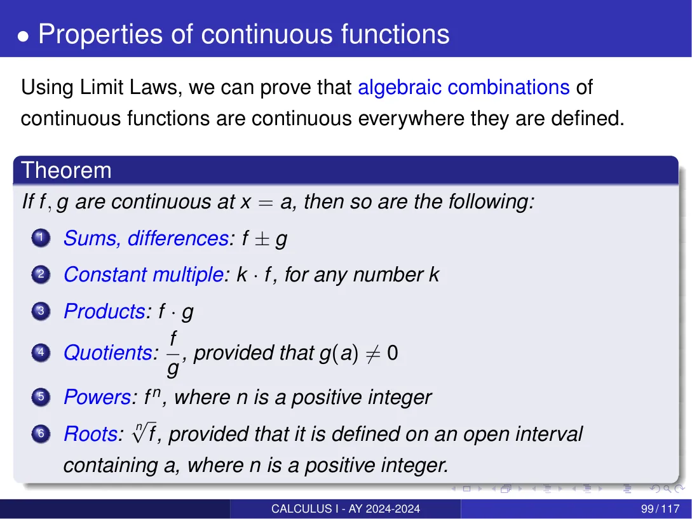
If $f$ and $g$ are continuous at $a$, so are $f\pm g$, $kf$, $f\cdot g$, $f^n$, the quotient $\frac fg$ (provided $g(a)\ne0$) and the root $\sqrt[n]f$ (provided it is defined on an open interval around $a$). The proof is one line each: the limit laws turn "limit equals value" into "limit of the combination equals value of the combination".
Nếu $f$ và $g$ liên tục tại $a$ thì $f\pm g$, $kf$, $f\cdot g$, $f^n$, thương $\frac fg$ (với điều kiện $g(a)\ne0$) và căn $\sqrt[n]f$ (với điều kiện xác định trên một khoảng mở quanh $a$) cũng liên tục. Chứng minh mỗi điều chỉ một dòng: quy tắc giới hạn biến "giới hạn bằng giá trị" thành "giới hạn của tổ hợp bằng giá trị của tổ hợp".
Where is $f(x)=\dfrac{x^2+1}{x-2}$ continuous?
$f(x)=\dfrac{x^2+1}{x-2}$ liên tục ở đâu?
Answer and solution · Đáp án và lời giải
Answer · Đáp án: $\mathbb R\setminus\{2\}$
Quotient of two polynomials (continuous), so continuous wherever the denominator is not $0$.
Thương của hai đa thức (liên tục), nên liên tục ở mọi nơi mẫu khác $0$.
Continuity on an interval · Tính liên tục trên một khoảng
★★★ Core · Cốt lõi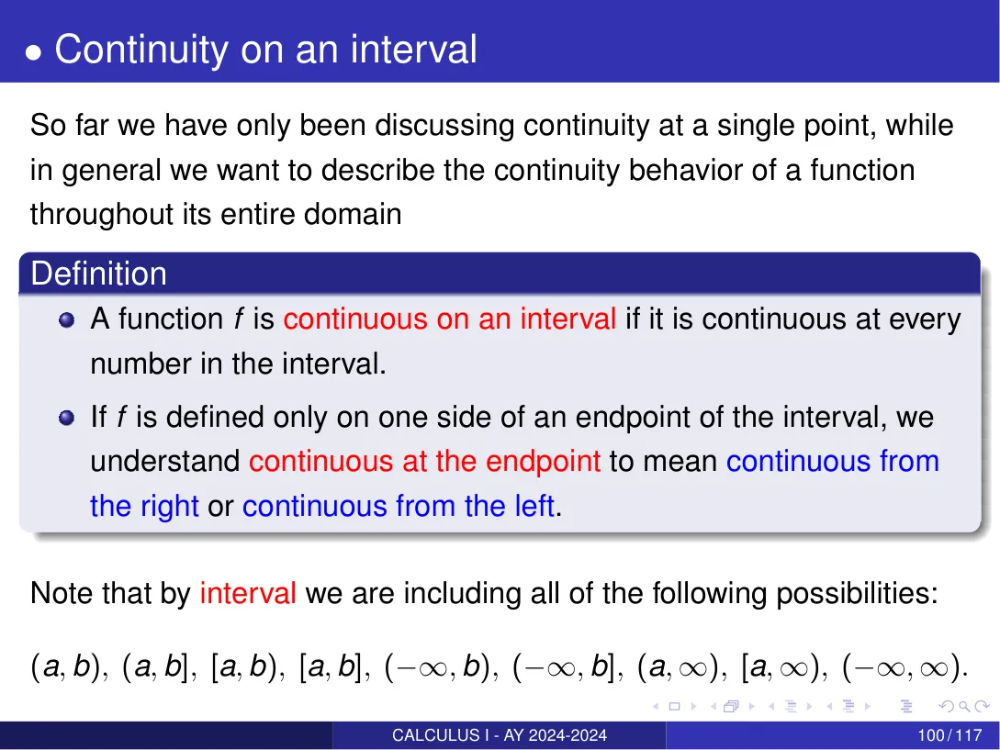
A function is continuous on an interval if it is continuous at every point of it; at an endpoint that belongs to the domain this means one-sided continuity. The slide lists all interval types: $(a,b)$, $[a,b]$, $(-\infty,b]$, $[a,\infty)$, $\mathbb R$ and so on.
Hàm liên tục trên một khoảng nếu liên tục tại mọi điểm của khoảng; tại đầu mút thuộc tập xác định thì có nghĩa là liên tục một phía. Slide liệt kê mọi loại khoảng: $(a,b)$, $[a,b]$, $(-\infty,b]$, $[a,\infty)$, $\mathbb R$, v.v.
Where is $f(x)=\dfrac{\sqrt{x-1}}{x-4}$ continuous?
$f(x)=\dfrac{\sqrt{x-1}}{x-4}$ liên tục ở đâu?
Answer and solution · Đáp án và lời giải
Answer · Đáp án: $[1,4)\cup(4,\infty)$ (right-continuous at $1$)
The root needs $x\ge1$ and the denominator $x\ne4$. At $x=1$ only the right side exists, so $f$ is right-continuous there.
Căn cần $x\ge1$ và mẫu cần $x\ne4$. Tại $x=1$ chỉ có phía phải nên $f$ liên tục bên phải ở đó.
Example: $2-\sqrt{1-x^2}$ is continuous on $[-1,1]$ · Ví dụ: $2-\sqrt{1-x^2}$ liên tục trên $[-1,1]$
★★ Important · Quan trọng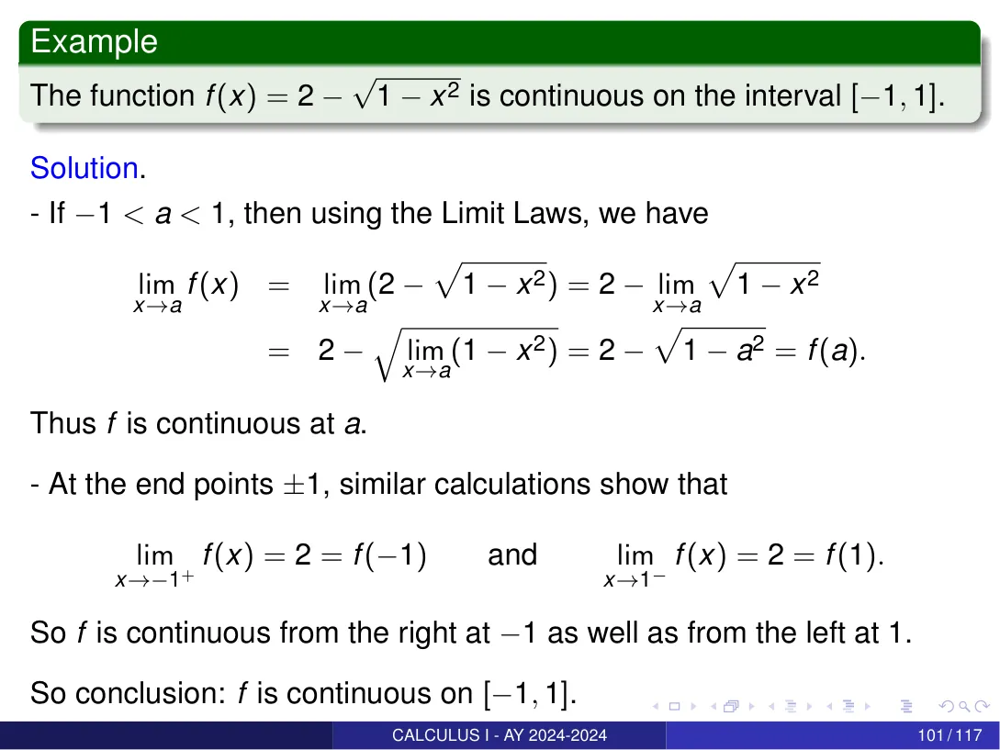
Inside $(-1,1)$ push the limit through the root and the subtraction using the limit laws: $\lim_{x\to a}(2-\sqrt{1-x^2})=2-\sqrt{1-a^2}=f(a)$. At the endpoints compute one-sided limits: $\lim_{x\to-1^+}f=2=f(-1)$ and $\lim_{x\to1^-}f=2=f(1)$. So $f$ is continuous on $[-1,1]$.
Bên trong $(-1,1)$ đưa giới hạn qua căn và phép trừ bằng quy tắc giới hạn: $\lim_{x\to a}(2-\sqrt{1-x^2})=2-\sqrt{1-a^2}=f(a)$. Tại hai đầu mút tính giới hạn một phía: $\lim_{x\to-1^+}f=2=f(-1)$ và $\lim_{x\to1^-}f=2=f(1)$. Vậy $f$ liên tục trên $[-1,1]$.
Continuity of the important functions · Tính liên tục của các hàm quan trọng
★★★ Core · Cốt lõi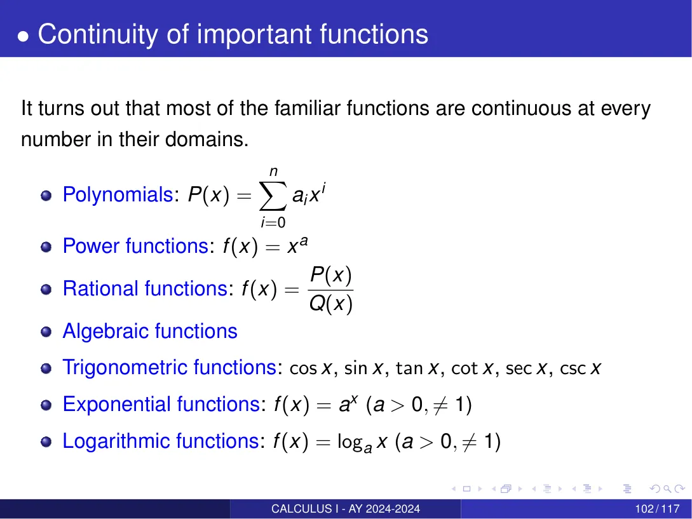
Polynomials, power functions, rational functions, algebraic functions, the six trigonometric functions, exponentials and logarithms are all continuous at every point of their domains. Stress "of their domains": $\tan x$ is continuous, yet it has infinitely many points where it is not defined.
Đa thức, hàm lũy thừa, hàm hữu tỉ, hàm đại số, sáu hàm lượng giác, hàm mũ và hàm logarit đều liên tục tại mọi điểm thuộc tập xác định. Nhấn mạnh "thuộc tập xác định": $\tan x$ là hàm liên tục, dù nó có vô số điểm không xác định.
Where is $f(x)=\ln(x^2-1)$ continuous?
$f(x)=\ln(x^2-1)$ liên tục ở đâu?
Answer and solution · Đáp án và lời giải
Answer · Đáp án: $(-\infty,-1)\cup(1,\infty)$
The logarithm needs $x^2-1>0$, i.e. $|x|>1$, and $\ln$ is continuous wherever it is defined.
Logarit cần $x^2-1>0$, tức $|x|>1$, và $\ln$ liên tục ở mọi nơi nó xác định.
The general principle · Nguyên tắc chung
★★★ Core · Cốt lõi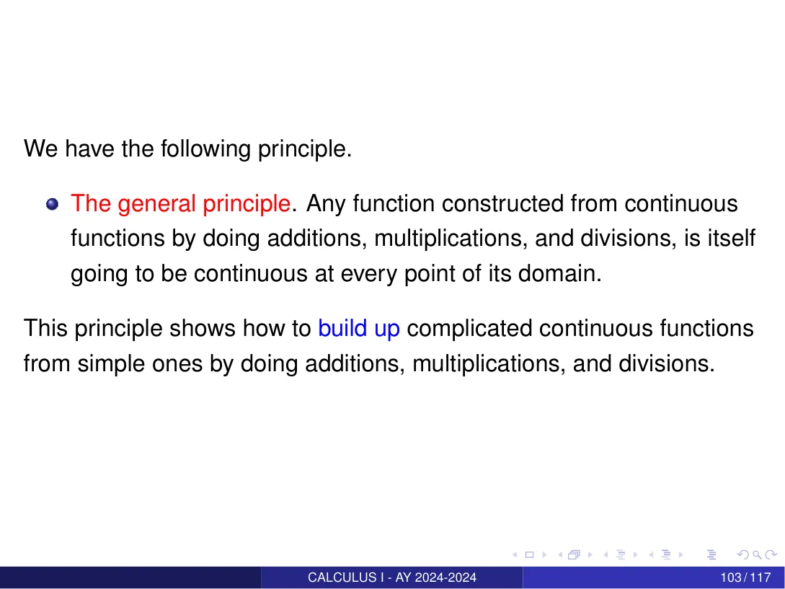
Any function built from continuous functions by addition, multiplication and division is continuous at every point of its domain. This is how we know a complicated formula is continuous without ever computing a limit: just check where it is defined.
Mọi hàm được xây từ các hàm liên tục bằng phép cộng, nhân, chia đều liên tục tại mọi điểm thuộc tập xác định. Nhờ vậy ta biết một công thức phức tạp liên tục mà không cần tính giới hạn nào: chỉ cần xem nó xác định ở đâu.
Find $a$ so that $f(x)=\begin{cases}x^2+1,&x\le1\\ax+3,&x>1\end{cases}$ is continuous at $x=1$.
Tìm $a$ để $f(x)=\begin{cases}x^2+1,&x\le1\\ax+3,&x>1\end{cases}$ liên tục tại $x=1$.
Answer and solution · Đáp án và lời giải
Answer · Đáp án: $a=-1$
Each piece is continuous alone; only the junction matters. Left value $f(1)=2$, right limit $a+3$. Require $a+3=2$.
Mỗi khúc tự nó liên tục; chỉ cần xét chỗ nối. Giá trị bên trái $f(1)=2$, giới hạn phải $a+3$. Cần $a+3=2$.
A limit can pass through a continuous function · Giới hạn có thể đi qua một hàm liên tục
★★★ Core · Cốt lõi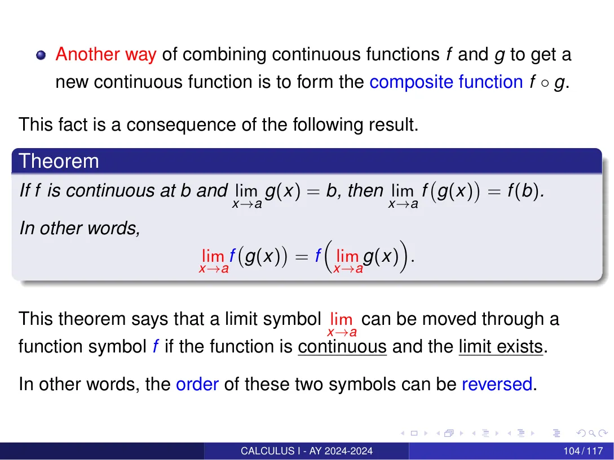
If $f$ is continuous at $b$ and $g(x)\to b$, then $\lim f(g(x))=f(b)=f(\lim g(x))$: the limit symbol can be moved inside a continuous function. This is a licence to swap two symbols, valid only when $f$ is continuous and the inner limit exists.
Nếu $f$ liên tục tại $b$ và $g(x)\to b$ thì $\lim f(g(x))=f(b)=f(\lim g(x))$: ký hiệu giới hạn có thể chuyển vào bên trong hàm liên tục. Đây là cho phép hoán đổi hai ký hiệu, chỉ đúng khi $f$ liên tục và giới hạn bên trong tồn tại.
It is the rigorous reason behind every "plug in the inner limit first" computation, and it is the proof that composites of continuous functions are continuous.
Đây là lý do chặt chẽ đằng sau mọi phép tính kiểu "tính giới hạn bên trong trước", và là chứng minh rằng hàm hợp của các hàm liên tục là liên tục.
Compute $\displaystyle\lim_{x\to2}e^{\frac{x^2-4}{x-2}}$.
Tính $\displaystyle\lim_{x\to2}e^{\frac{x^2-4}{x-2}}$.
Answer and solution · Đáp án và lời giải
Answer · Đáp án: $e^4$
The inner limit is $\lim\frac{x^2-4}{x-2}=\lim(x+2)=4$, and $e^{u}$ is continuous, so the limit is $e^4$.
Giới hạn bên trong là $\lim\frac{x^2-4}{x-2}=\lim(x+2)=4$, và $e^u$ liên tục nên giới hạn là $e^4$.
Compute $\displaystyle\lim_{x\to0}\cos(\sin x)$.
Tính $\displaystyle\lim_{x\to0}\cos(\sin x)$.
Answer and solution · Đáp án và lời giải
Answer · Đáp án: $1$
$\sin x\to0$ and $\cos$ is continuous at $0$: the limit is $\cos0=1$.
$\sin x\to0$ và $\cos$ liên tục tại $0$: giới hạn là $\cos0=1$.
Continuity of composite functions · Tính liên tục của hàm hợp
★★★ Core · Cốt lõi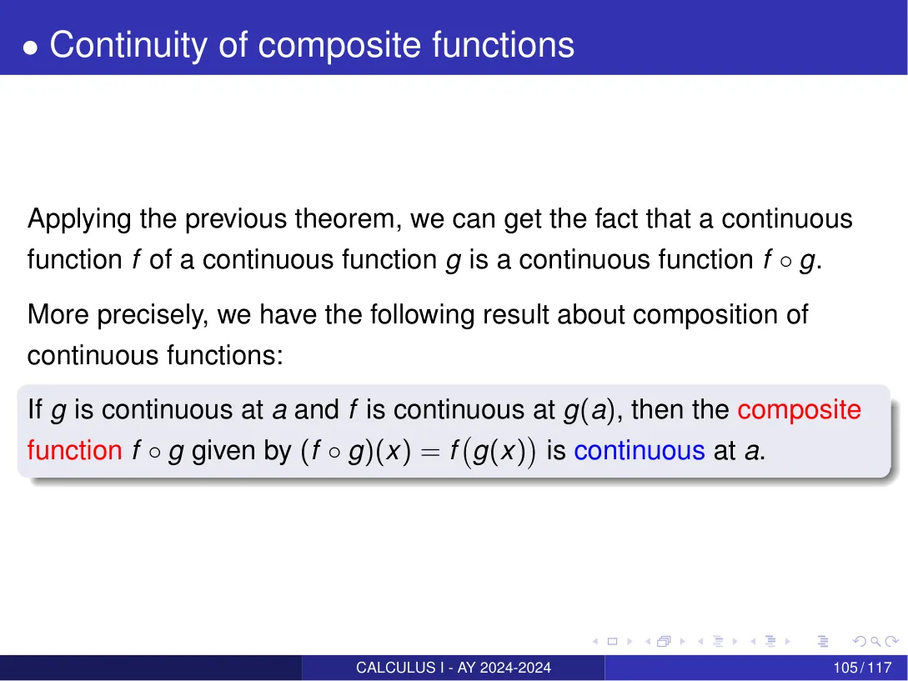
If $g$ is continuous at $a$ and $f$ is continuous at $g(a)$, then $f\circ g$ is continuous at $a$. A continuous function of a continuous function is continuous. Combine with Lecture 1: to see where a composite is continuous, find where each layer is.
Nếu $g$ liên tục tại $a$ và $f$ liên tục tại $g(a)$ thì $f\circ g$ liên tục tại $a$. Hàm liên tục của hàm liên tục là hàm liên tục. Kết hợp với Bài 1: để biết hàm hợp liên tục ở đâu, tìm xem từng lớp liên tục ở đâu.
Where is $h(x)=\sqrt{x^2-4}$ continuous?
$h(x)=\sqrt{x^2-4}$ liên tục ở đâu?
Answer and solution · Đáp án và lời giải
Answer · Đáp án: $(-\infty,-2]\cup[2,\infty)$
The root needs $x^2-4\ge0$, i.e. $|x|\ge2$; inside that set the composite of continuous functions is continuous (one-sided at $\pm2$).
Căn cần $x^2-4\ge0$, tức $|x|\ge2$; trong tập đó hàm hợp của các hàm liên tục là liên tục (một phía tại $\pm2$).
Example: $\lim|g(x)|=|\lim g(x)|$ · Ví dụ: $\lim|g(x)|=|\lim g(x)|$
★★ Important · Quan trọng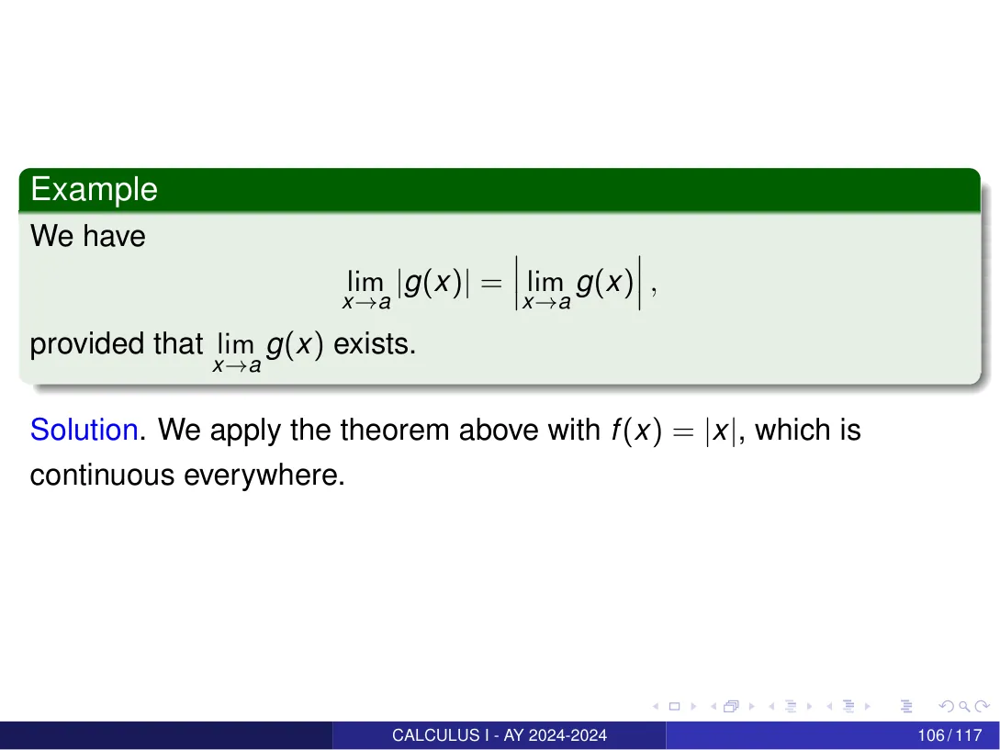
Take $f(x)=|x|$, which is continuous everywhere. By the theorem, if $\lim_{x\to a}g(x)$ exists then $\lim|g(x)|=|\lim g(x)|$. A quick way to compute limits with absolute values once the inner limit is known.
Lấy $f(x)=|x|$, liên tục trên toàn $\mathbb R$. Theo định lý, nếu $\lim_{x\to a}g(x)$ tồn tại thì $\lim|g(x)|=|\lim g(x)|$. Đây là cách nhanh để tính giới hạn có giá trị tuyệt đối khi đã biết giới hạn bên trong.
Compute $\displaystyle\lim_{x\to2}|x^2-9|$.
Tính $\displaystyle\lim_{x\to2}|x^2-9|$.
Answer and solution · Đáp án và lời giải
Answer · Đáp án: $5$
$x^2-9\to-5$, and $|\cdot|$ is continuous: the limit is $|-5|=5$.
$x^2-9\to-5$, và $|\cdot|$ liên tục: giới hạn là $|-5|=5$.
Application: a graph hidden under a box · Ứng dụng: đồ thị bị che dưới một hộp
★★ Important · Quan trọng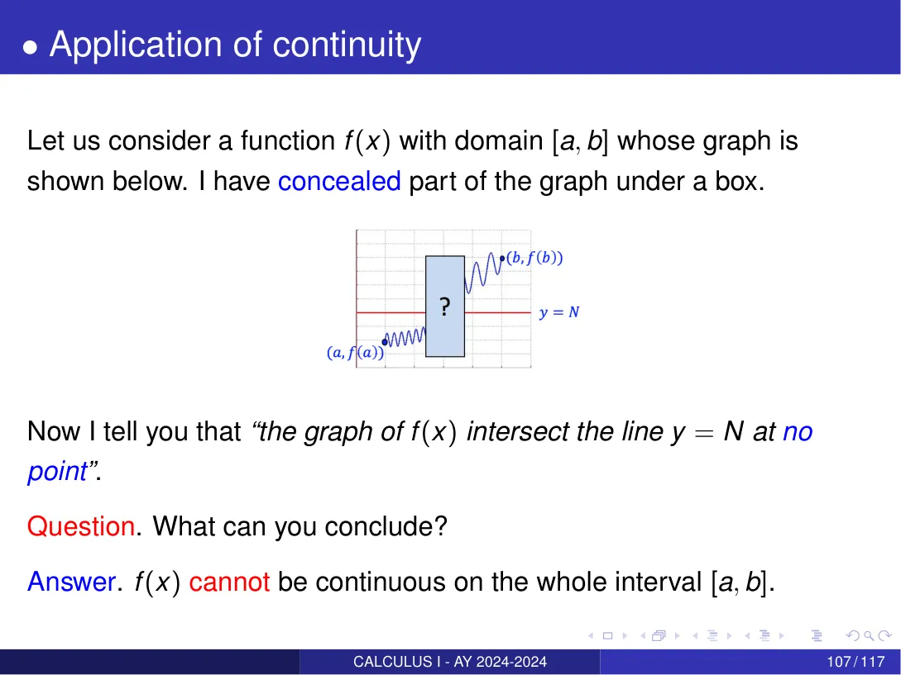
A thought experiment before the theorem. The graph of $f$ on $[a,b]$ is partly hidden. You are told the graph never meets the line $y=N$. If $N$ lies between $f(a)$ and $f(b)$, what follows? The graph would have to jump over the line, so $f$ cannot be continuous on $[a,b]$. Let the student find this idea before you state the theorem.
Một thí nghiệm tư duy trước khi nêu định lý. Đồ thị của $f$ trên $[a,b]$ bị che một phần. Bạn được cho biết đồ thị không bao giờ cắt đường $y=N$. Nếu $N$ nằm giữa $f(a)$ và $f(b)$ thì kết luận gì? Đồ thị phải "nhảy qua" đường thẳng, nên $f$ không thể liên tục trên $[a,b]$. Để bạn tự khám phá ý này trước khi nêu định lý.
The Intermediate Value Theorem · Định lý giá trị trung gian
★★★ Core · Cốt lõi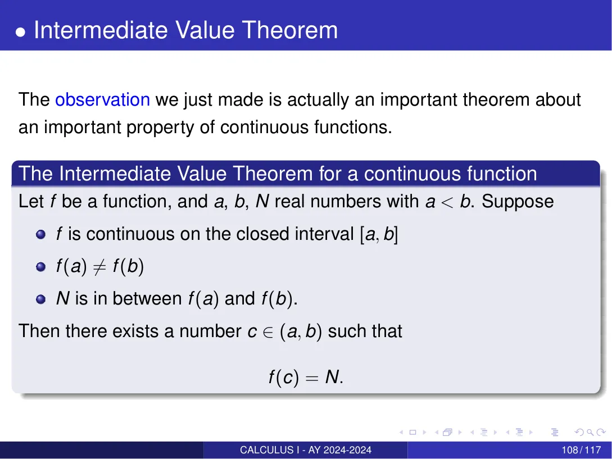
IVT. If $f$ is continuous on the closed interval $[a,b]$, $f(a)\ne f(b)$ and $N$ is between $f(a)$ and $f(b)$, then there is a $c\in(a,b)$ with $f(c)=N$. Check the hypotheses every time: continuity on the whole closed interval, and $N$ strictly between the end values.
IVT. Nếu $f$ liên tục trên đoạn đóng $[a,b]$, $f(a)\ne f(b)$ và $N$ nằm giữa $f(a)$ và $f(b)$ thì tồn tại $c\in(a,b)$ sao cho $f(c)=N$. Luôn kiểm tra giả thiết: liên tục trên cả đoạn đóng, và $N$ nằm giữa hai giá trị đầu mút.
The IVT is how we prove that equations have solutions when we cannot solve them, and the proof that continuous functions on intervals have no gaps; it is tested as "show that this equation has a root".
IVT là cách chứng minh phương trình có nghiệm khi ta không giải được nó, và là chứng minh hàm liên tục trên một khoảng không có "khe hở"; nó được kiểm tra dưới dạng "chứng minh phương trình này có nghiệm".
Can the IVT be used to show that $f(x)=\dfrac1x$ has a zero on $[-1,1]$, since $f(-1)=-1<0<1=f(1)$?
Có thể dùng IVT để chứng tỏ $f(x)=\dfrac1x$ có nghiệm trên $[-1,1]$, vì $f(-1)=-1<0<1=f(1)$ không?
Answer and solution · Đáp án và lời giải
Answer · Đáp án: No
$f$ is not continuous on $[-1,1]$ (it is not even defined at $0$), so the hypothesis fails. Indeed $\frac1x=0$ has no solution.
$f$ không liên tục trên $[-1,1]$ (thậm chí không xác định tại $0$), nên giả thiết sai. Thật vậy $\frac1x=0$ vô nghiệm.
What the IVT says: every intermediate value is taken · IVT nói gì: mọi giá trị trung gian đều đạt được
★★ Important · Quan trọng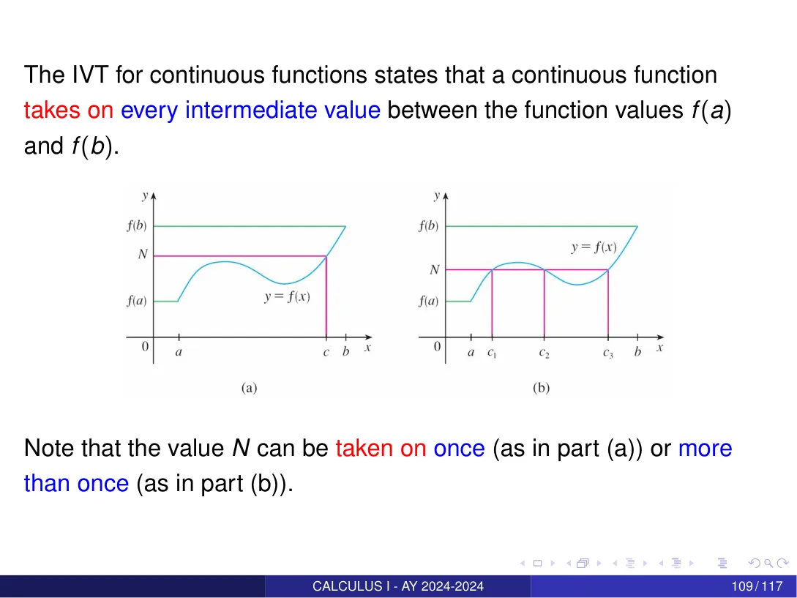
A continuous function takes every value between $f(a)$ and $f(b)$. The value $N$ can be taken once (part (a) of the figure) or several times (part (b)): the theorem promises at least one $c$, not exactly one.
Hàm liên tục nhận mọi giá trị giữa $f(a)$ và $f(b)$. Giá trị $N$ có thể đạt một lần (hình (a)) hoặc nhiều lần (hình (b)): định lý chỉ đảm bảo có ít nhất một $c$, không phải đúng một.
Geometric meaning of the IVT · Ý nghĩa hình học của IVT
★★ Important · Quan trọng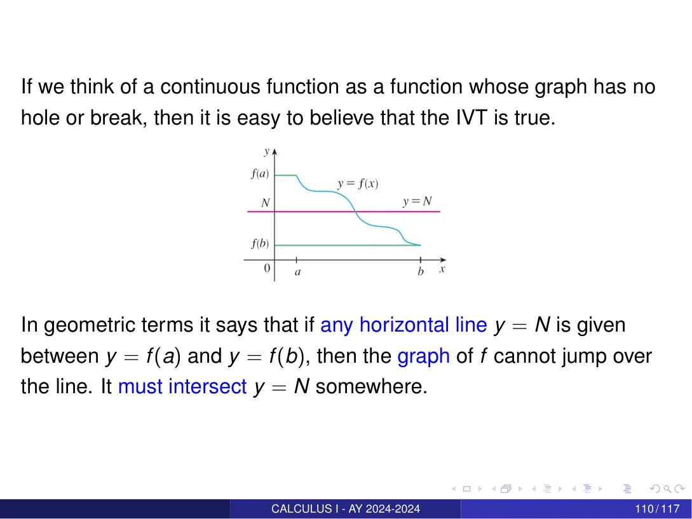
If a continuous function is one "with no hole or break", the IVT is easy to believe: any horizontal line $y=N$ between $y=f(a)$ and $y=f(b)$ cannot be jumped over, so the graph must cross it somewhere.
Nếu coi hàm liên tục là hàm "không có lỗ hay chỗ đứt", IVT dễ tin: mọi đường ngang $y=N$ nằm giữa $y=f(a)$ và $y=f(b)$ không thể bị nhảy qua, nên đồ thị phải cắt nó ở đâu đó.
Example: a root of $4x^3-6x^2+3x-2=0$ between 1 and 2 · Ví dụ: nghiệm của $4x^3-6x^2+3x-2=0$ trong khoảng $(1,2)$
★★★ Core · Cốt lõi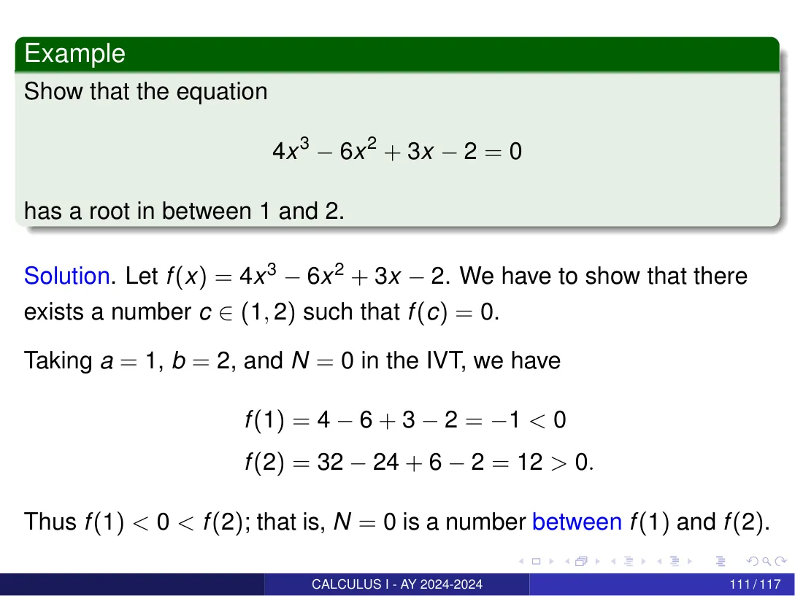
Template for "show that the equation has a root in $(a,b)$": let $f$ be the left side minus the right side; compute $f(1)=-1<0$ and $f(2)=12>0$, so $N=0$ lies between them. $f$ is a polynomial, hence continuous, so the IVT gives $c\in(1,2)$ with $f(c)=0$.
Khuôn cho dạng "chứng minh phương trình có nghiệm trong $(a,b)$": đặt $f$ là vế trái trừ vế phải; tính $f(1)=-1<0$ và $f(2)=12>0$ nên $N=0$ nằm giữa. $f$ là đa thức nên liên tục, do đó IVT cho $c\in(1,2)$ với $f(c)=0$.
Show that $x^3+x-1=0$ has a root in $(0,1)$.
Chứng minh $x^3+x-1=0$ có nghiệm trong $(0,1)$.
Answer and solution · Đáp án và lời giải
Answer · Đáp án: root in $(0,1)$ (about $0.6823$)
Let $f(x)=x^3+x-1$, continuous. $f(0)=-1<0$ and $f(1)=1>0$, so by the IVT there is $c\in(0,1)$ with $f(c)=0$.
Đặt $f(x)=x^3+x-1$, liên tục. $f(0)=-1<0$ và $f(1)=1>0$ nên theo IVT tồn tại $c\in(0,1)$ với $f(c)=0$.
Show that $\cos x=x$ has a solution in $(0,1)$.
Chứng minh $\cos x=x$ có nghiệm trong $(0,1)$.
Answer and solution · Đáp án và lời giải
Answer · Đáp án: root in $(0,1)$ (about $0.7391$)
Let $g(x)=\cos x-x$, continuous. $g(0)=1>0$ and $g(1)=\cos1-1<0$ (since $\cos1\approx0.54$), so $g$ has a zero in $(0,1)$.
Đặt $g(x)=\cos x-x$, liên tục. $g(0)=1>0$ và $g(1)=\cos1-1<0$ (vì $\cos1\approx0.54$) nên $g$ có nghiệm trong $(0,1)$.
Conclusion and locating the root more precisely · Kết luận và xác định nghiệm chính xác hơn
★★★ Core · Cốt lõi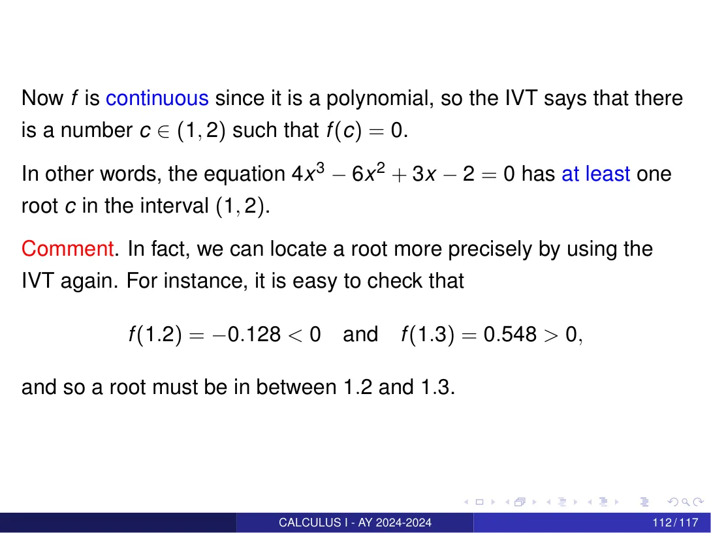
So the equation has at least one root in $(1,2)$. Use the IVT again to narrow it down: $f(1.2)=-0.128<0$ and $f(1.3)=0.548>0$, so a root lies in $(1.2,1.3)$. Repeating this halving is the bisection method.
Vậy phương trình có ít nhất một nghiệm trong $(1,2)$. Dùng IVT lần nữa để thu hẹp: $f(1.2)=-0.128<0$ và $f(1.3)=0.548>0$ nên có nghiệm trong $(1.2,1.3)$. Lặp lại việc chia đôi này là phương pháp chia đôi (bisection).
For $f(x)=4x^3-6x^2+3x-2$, compute $f(1.25)$ and decide whether the root lies in $(1.2,1.25)$ or in $(1.25,1.3)$.
Với $f(x)=4x^3-6x^2+3x-2$, tính $f(1.25)$ và cho biết nghiệm nằm trong $(1.2,1.25)$ hay $(1.25,1.3)$.
Answer and solution · Đáp án và lời giải
Answer · Đáp án: $f(1.25)=0.1875>0$: the root is in $(1.2,1.25)$
$f(1.25)=4(1.953125)-6(1.5625)+3.75-2=0.1875>0$. Since $f(1.2)<0<f(1.25)$ the root is in $(1.2,1.25)$.
$f(1.25)=4(1.953125)-6(1.5625)+3.75-2=0.1875>0$. Vì $f(1.2)<0<f(1.25)$ nên nghiệm nằm trong $(1.2,1.25)$.
Applications of continuity in real life · Ứng dụng của tính liên tục trong đời sống
★ Context · Bổ trợ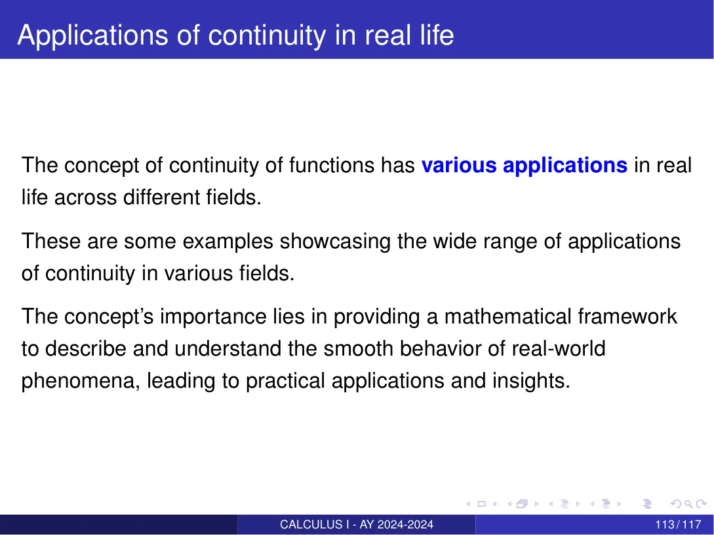
Motivation only: continuity gives a mathematical frame for the smooth behaviour of real phenomena. One minute, then move on.
Chỉ là động lực: tính liên tục cho một khung toán học để mô tả hành vi trơn tru của các hiện tượng thực tế. Một phút rồi đi tiếp.
Engineering, physics and computer science · Kỹ thuật, vật lý và khoa học máy tính
★ Context · Bổ trợ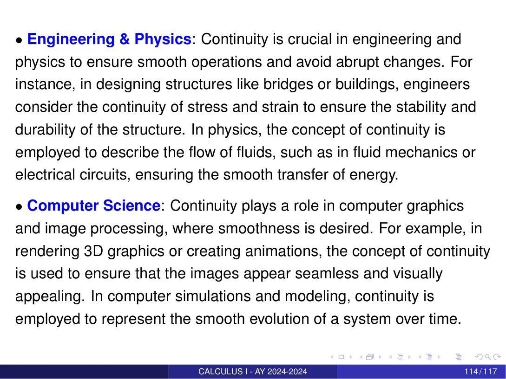
Engineering and physics: continuity of stress and strain in structures, fluid flow and electric circuits. Computer science: smooth graphics, animation and simulation of systems over time.
Kỹ thuật và vật lý: tính liên tục của ứng suất và biến dạng trong kết cấu, dòng chảy chất lỏng và mạch điện. Khoa học máy tính: đồ họa mượt, hoạt hình và mô phỏng hệ thống theo thời gian.
Environmental sciences, medicine and biology · Khoa học môi trường, y học và sinh học
★ Context · Bổ trợWeather and climate models and pollution dispersion assume continuous variables; medical imaging (CT, MRI) and biological processes such as growth or metabolism change continuously.
Mô hình thời tiết, khí hậu và sự lan truyền ô nhiễm giả định các biến liên tục; chụp ảnh y khoa (CT, MRI) và các quá trình sinh học như tăng trưởng hay trao đổi chất thay đổi liên tục.
Economics and finance · Kinh tế và tài chính
★ Context · Bổ trợ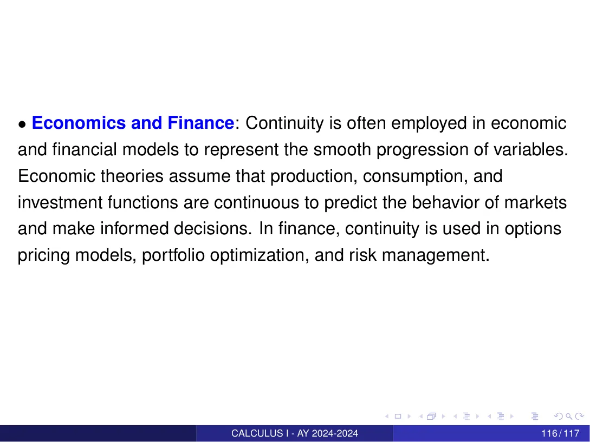
Production, consumption and investment functions are assumed continuous in economic theory; in finance, options pricing, portfolio optimisation and risk management use continuity.
Lý thuyết kinh tế giả định các hàm sản xuất, tiêu dùng và đầu tư liên tục; trong tài chính, định giá quyền chọn, tối ưu danh mục và quản trị rủi ro dùng tính liên tục.
End of Chapter 1 · Kết thúc Chương 1
★ Context · Bổ trợ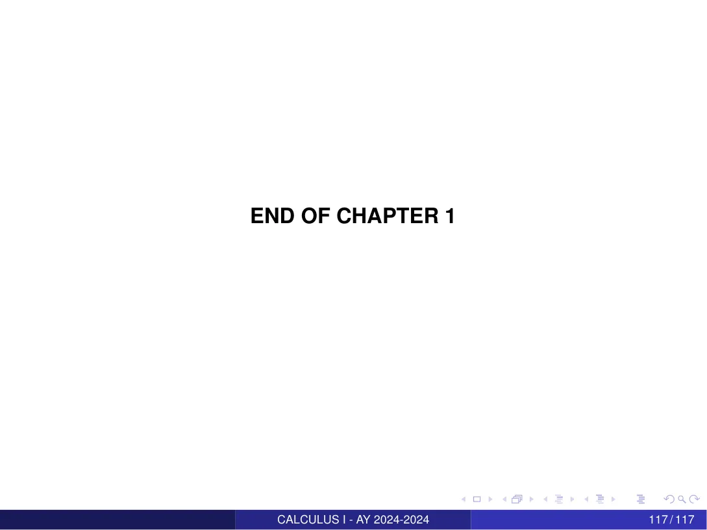
End of Chapter 1. Quick recap before the break: functions → limits → continuity → IVT. Ask the student to state the IVT and the continuity test without looking.
Kết thúc Chương 1. Tóm tắt nhanh trước giờ nghỉ: hàm số → giới hạn → liên tục → IVT. Yêu cầu bạn phát biểu IVT và phép thử liên tục mà không nhìn tài liệu.
Chapter 2: Derivatives · Chương 2: Đạo hàm
★ Context · Bổ trợ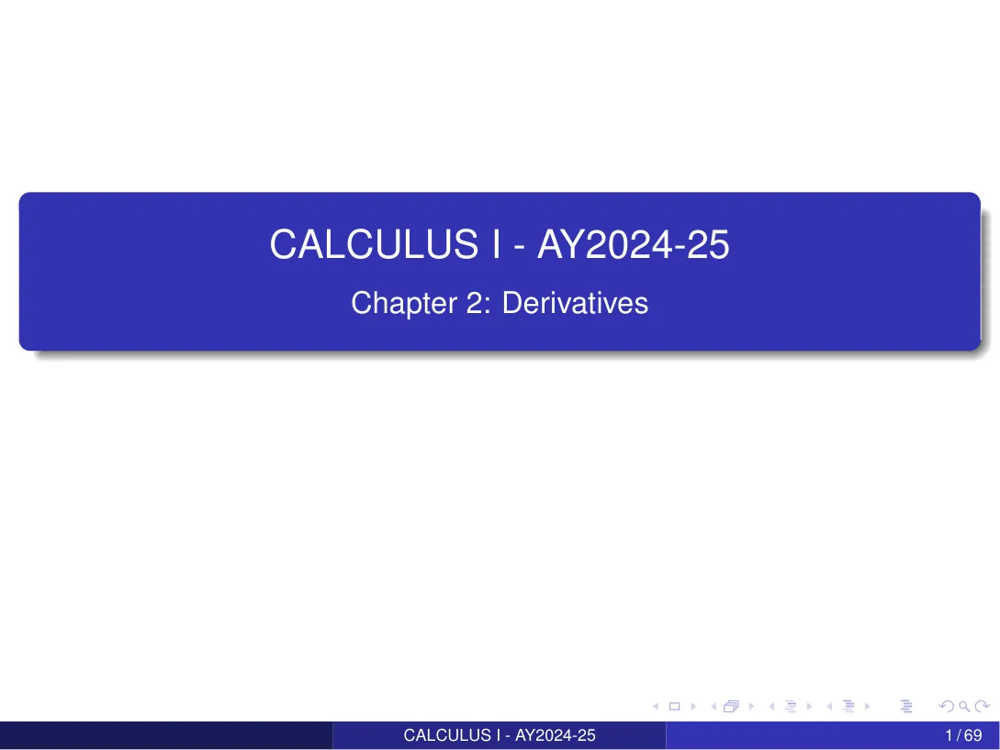
Open Chapter 2. Tell the student the picture to keep in mind: the derivative is the slope of the tangent, which we meet through the limit of secant slopes from Lecture 1.
Mở Chương 2. Nói với bạn hình ảnh cần nhớ: đạo hàm là hệ số góc của tiếp tuyến, mà ta gặp qua giới hạn của hệ số góc các cát tuyến ở Bài 1.
Roadmap of Chapter 2 · Lộ trình của Chương 2
★ Context · Bổ trợ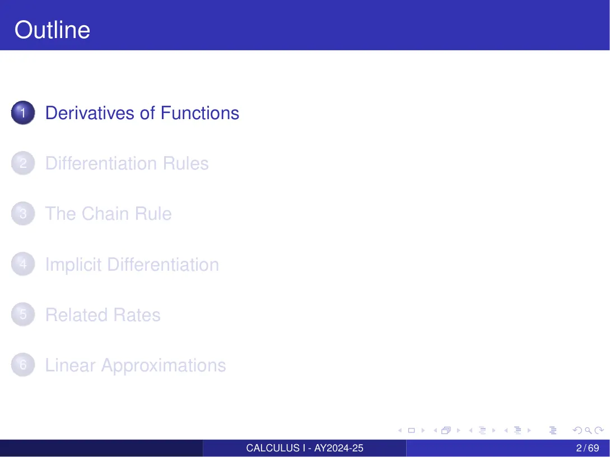
Six parts: derivatives of functions, differentiation rules, the chain rule, implicit differentiation, related rates, linear approximations. Today only the first part.
Sáu phần: đạo hàm của hàm số, các quy tắc đạo hàm, quy tắc đạo hàm hàm hợp, đạo hàm ẩn, tốc độ biến thiên liên quan, xấp xỉ tuyến tính. Hôm nay chỉ học phần đầu.
Why derivatives matter · Vì sao đạo hàm quan trọng
★ Context · Bổ trợ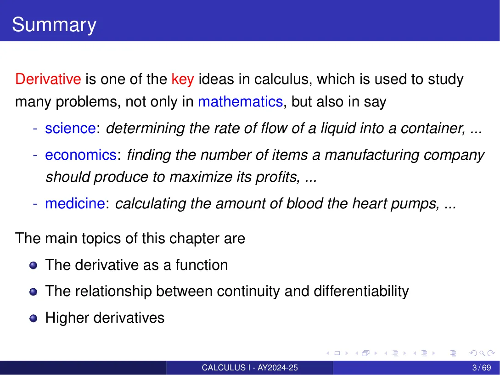
The derivative is one of the key ideas of calculus, used in science (rate of flow), economics (profit maximisation) and medicine (blood pumped by the heart). Topics of this chapter: the derivative as a function, the relation between continuity and differentiability, higher derivatives.
Đạo hàm là một trong những ý tưởng chủ chốt của giải tích, dùng trong khoa học (tốc độ dòng chảy), kinh tế (cực đại hóa lợi nhuận) và y học (lượng máu tim bơm). Chủ đề của chương: đạo hàm như một hàm số, mối quan hệ giữa liên tục và khả vi, đạo hàm cấp cao.
The tangent as a limit · Tiếp tuyến như một giới hạn
★★★ Core · Cốt lõi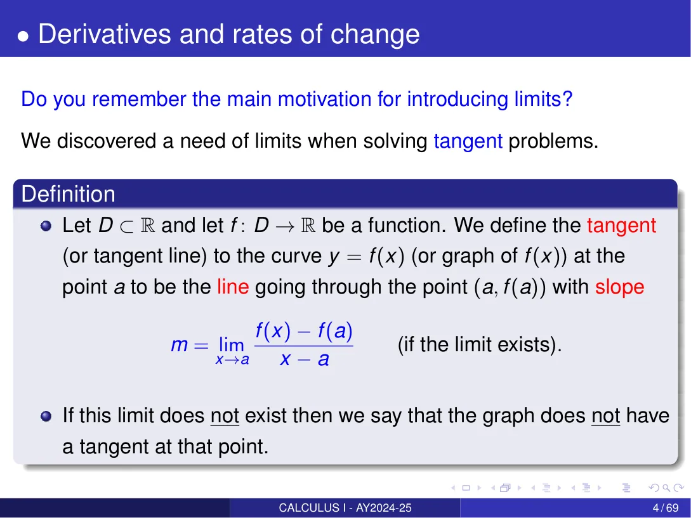
Recall why limits were invented: the tangent problem. Definition: the tangent to $y=f(x)$ at $a$ is the line through $(a,f(a))$ with slope $m=\lim_{x\to a}\frac{f(x)-f(a)}{x-a}$, if the limit exists; if it does not, there is no tangent. The fraction is the slope of the secant through $(a,f(a))$ and $(x,f(x))$.
Nhắc lại vì sao giới hạn được phát minh: bài toán tiếp tuyến. Định nghĩa: tiếp tuyến của $y=f(x)$ tại $a$ là đường thẳng đi qua $(a,f(a))$ với hệ số góc $m=\lim_{x\to a}\frac{f(x)-f(a)}{x-a}$, nếu giới hạn tồn tại; nếu không tồn tại thì không có tiếp tuyến. Phân số này là hệ số góc cát tuyến qua $(a,f(a))$ và $(x,f(x))$.
Find the slope of the tangent to $y=x^2$ at $x=a$.
Tìm hệ số góc tiếp tuyến của $y=x^2$ tại $x=a$.
Answer and solution · Đáp án và lời giải
Answer · Đáp án: $m=2a$
$\frac{x^2-a^2}{x-a}=x+a\to2a$ as $x\to a$.
$\frac{x^2-a^2}{x-a}=x+a\to2a$ khi $x\to a$.
Find the slope and the equation of the tangent to $y=\dfrac1x$ at $x=2$.
Tìm hệ số góc và phương trình tiếp tuyến của $y=\dfrac1x$ tại $x=2$.
Answer and solution · Đáp án và lời giải
Answer · Đáp án: $m=-\dfrac14$; $y=-\dfrac x4+1$
$\frac{\frac1x-\frac12}{x-2}=\frac{2-x}{2x(x-2)}=-\frac1{2x}\to-\frac14$. The line through $(2,\frac12)$: $y-\frac12=-\frac14(x-2)$, i.e. $y=-\frac x4+1$.
$\frac{\frac1x-\frac12}{x-2}=\frac{2-x}{2x(x-2)}=-\frac1{2x}\to-\frac14$. Đường thẳng qua $(2,\frac12)$: $y-\frac12=-\frac14(x-2)$, tức $y=-\frac x4+1$.
The same limit with the displacement $h$ · Cùng giới hạn đó với độ dời $h$
★★★ Core · Cốt lõi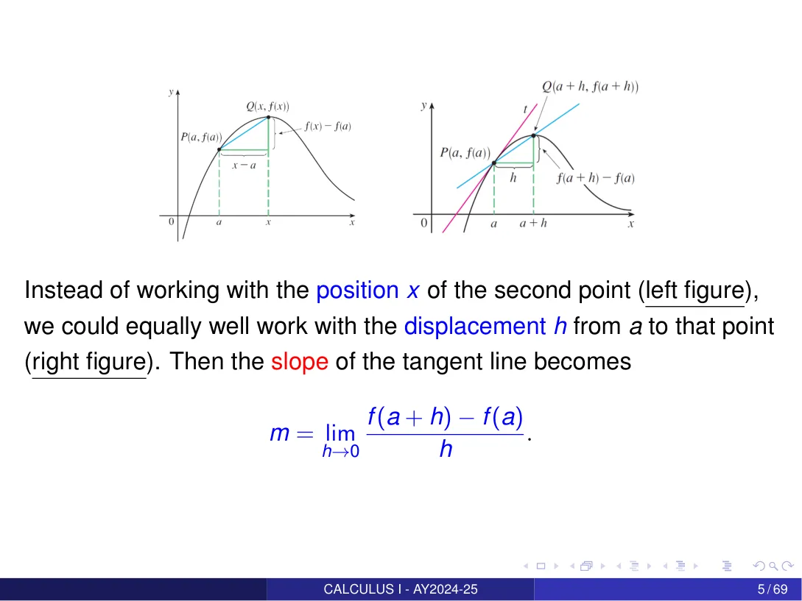
Instead of the position $x$ of the second point, use the displacement $h=x-a$. Then the slope is $m=\lim_{h\to0}\frac{f(a+h)-f(a)}{h}$. This $h$-form is the one used in most calculations.
Thay vì dùng vị trí $x$ của điểm thứ hai, dùng độ dời $h=x-a$. Khi đó hệ số góc là $m=\lim_{h\to0}\frac{f(a+h)-f(a)}{h}$. Dạng $h$ này được dùng trong hầu hết các phép tính.
Using the $h$-form, find the slope of the tangent to $y=\sqrt x$ at $x=4$.
Dùng dạng $h$, tìm hệ số góc tiếp tuyến của $y=\sqrt x$ tại $x=4$.
Answer and solution · Đáp án và lời giải
Answer · Đáp án: $\dfrac14$
$\frac{\sqrt{4+h}-2}{h}=\frac{(4+h)-4}{h(\sqrt{4+h}+2)}=\frac1{\sqrt{4+h}+2}\to\frac14$.
$\frac{\sqrt{4+h}-2}{h}=\frac{(4+h)-4}{h(\sqrt{4+h}+2)}=\frac1{\sqrt{4+h}+2}\to\frac14$.
Limit and velocity: the ball dropped from the CN Tower · Giới hạn và vận tốc: quả bóng thả từ tháp CN
★★ Important · Quan trọng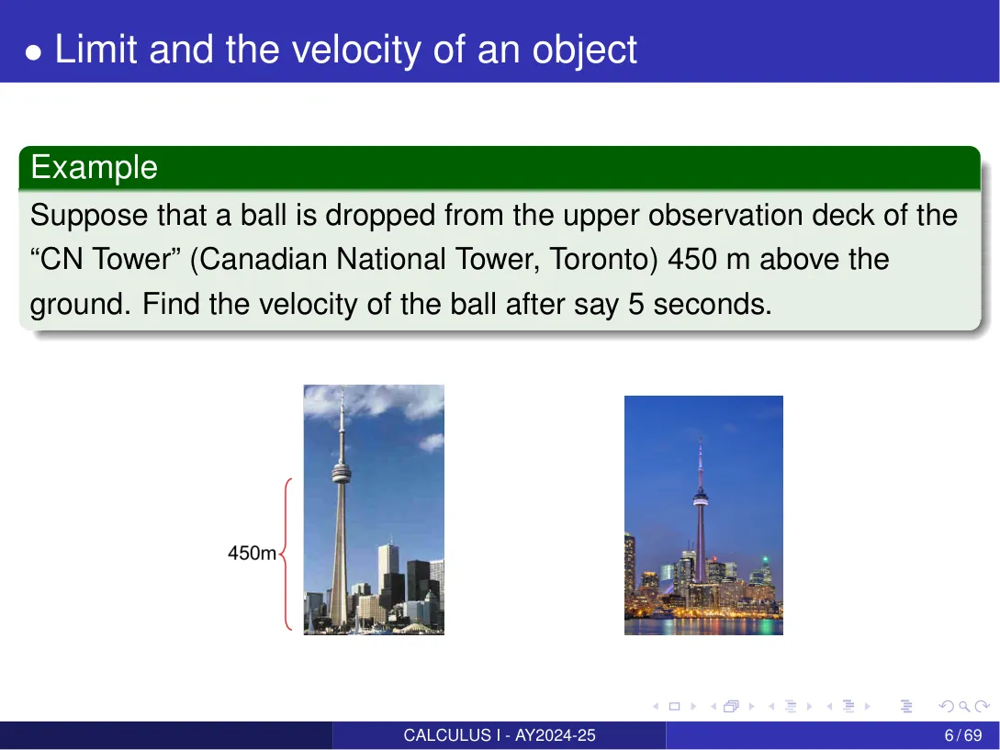
A ball is dropped from the 450 m deck of the CN Tower; what is its velocity after $5$ s? Average velocity over $[5,5+h]$ is distance over time; the instantaneous velocity is its limit as $h\to0$. With $s(t)=4.9t^2$ metres: $\frac{4.9(5+h)^2-4.9\cdot25}{h}=4.9(10+h)\to49$ m/s.
Một quả bóng được thả từ đài quan sát cao 450 m của tháp CN; vận tốc của nó sau $5$ s là bao nhiêu? Vận tốc trung bình trên $[5,5+h]$ là quãng đường chia thời gian; vận tốc tức thời là giới hạn của nó khi $h\to0$. Với $s(t)=4.9t^2$ mét: $\frac{4.9(5+h)^2-4.9\cdot25}{h}=4.9(10+h)\to49$ m/s.
For $s(t)=4.9t^2$ find the velocity after $2$ seconds.
Với $s(t)=4.9t^2$, tìm vận tốc sau $2$ giây.
Answer and solution · Đáp án và lời giải
Answer · Đáp án: $19.6$ m/s
$\frac{4.9(2+h)^2-4.9\cdot4}{h}=4.9(4+h)\to19.6$.
$\frac{4.9(2+h)^2-4.9\cdot4}{h}=4.9(4+h)\to19.6$.
Instantaneous velocity · Vận tốc tức thời
★★★ Core · Cốt lõi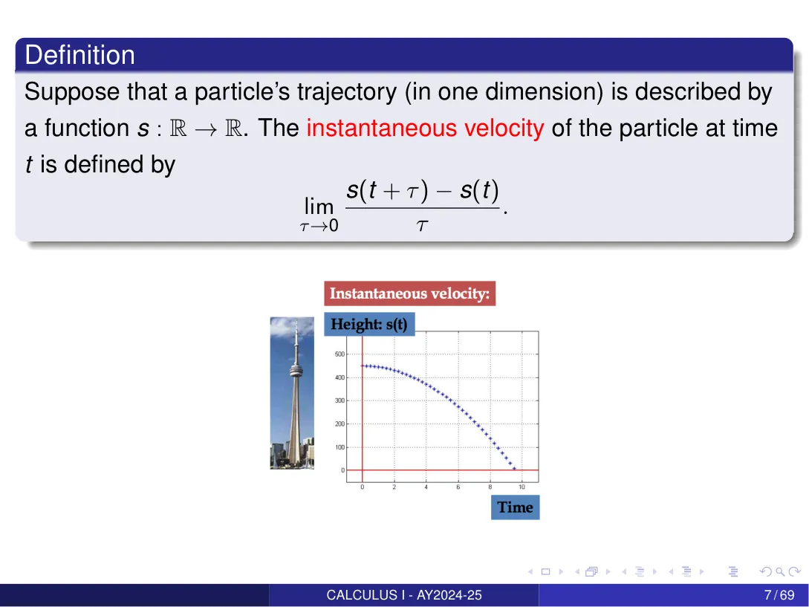
Definition: if the position is $s(t)$, the instantaneous velocity at time $t$ is $\lim_{\tau\to0}\frac{s(t+\tau)-s(t)}{\tau}$. It is the same limit as the tangent slope, with $t$ in place of $x$.
Định nghĩa: nếu vị trí là $s(t)$ thì vận tốc tức thời tại thời điểm $t$ là $\lim_{\tau\to0}\frac{s(t+\tau)-s(t)}{\tau}$. Đây là cùng một giới hạn với hệ số góc tiếp tuyến, chỉ thay $x$ bằng $t$.
A particle has position $s(t)=t^2+3t$. Find its velocity at $t=2$ from the definition.
Một chất điểm có vị trí $s(t)=t^2+3t$. Tìm vận tốc tại $t=2$ từ định nghĩa.
Answer and solution · Đáp án và lời giải
Answer · Đáp án: $7$
$\frac{(2+\tau)^2+3(2+\tau)-10}{\tau}=\frac{7\tau+\tau^2}{\tau}=7+\tau\to7$.
$\frac{(2+\tau)^2+3(2+\tau)-10}{\tau}=\frac{7\tau+\tau^2}{\tau}=7+\tau\to7$.
The definition of the derivative at a point · Định nghĩa đạo hàm tại một điểm
★★★ Core · Cốt lõi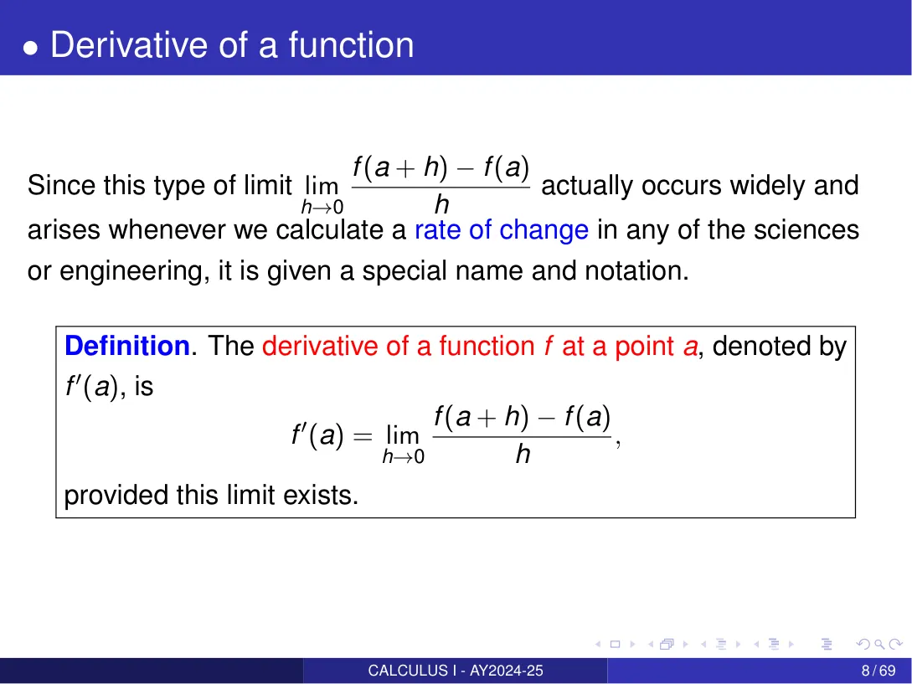
The same limit arises whenever we compute a rate of change, so it gets a name: the derivative of $f$ at $a$ is $f'(a)=\lim_{h\to0}\frac{f(a+h)-f(a)}{h}$, provided the limit exists. Say it three ways: slope of the tangent, instantaneous rate of change, limit of difference quotients.
Cùng một giới hạn xuất hiện mỗi khi ta tính một tốc độ biến thiên, nên nó được đặt tên: đạo hàm của $f$ tại $a$ là $f'(a)=\lim_{h\to0}\frac{f(a+h)-f(a)}{h}$, nếu giới hạn tồn tại. Nói theo ba cách: hệ số góc tiếp tuyến, tốc độ biến thiên tức thời, giới hạn của thương sai phân.
This is the definition of Chapter 2: every rule (power, product, chain) is a shortcut for this limit, and tests ask for "differentiate from the definition".
Đây là định nghĩa trung tâm của Chương 2: mọi quy tắc (lũy thừa, tích, hàm hợp) đều là đường tắt của giới hạn này, và đề thi hỏi "tính đạo hàm bằng định nghĩa".
Find $f'(a)$ for $f(x)=x^3$ from the definition.
Tìm $f'(a)$ cho $f(x)=x^3$ từ định nghĩa.
Answer and solution · Đáp án và lời giải
Answer · Đáp án: $3a^2$
$\frac{(a+h)^3-a^3}{h}=\frac{3a^2h+3ah^2+h^3}{h}=3a^2+3ah+h^2\to3a^2$.
$\frac{(a+h)^3-a^3}{h}=\frac{3a^2h+3ah^2+h^3}{h}=3a^2+3ah+h^2\to3a^2$.
Find $f'(a)$ for $f(x)=\sqrt x$ with $a>0$.
Tìm $f'(a)$ cho $f(x)=\sqrt x$ với $a>0$.
Answer and solution · Đáp án và lời giải
Answer · Đáp án: $\dfrac1{2\sqrt a}$
$\frac{\sqrt{a+h}-\sqrt a}{h}=\frac1{\sqrt{a+h}+\sqrt a}\to\frac1{2\sqrt a}$.
$\frac{\sqrt{a+h}-\sqrt a}{h}=\frac1{\sqrt{a+h}+\sqrt a}\to\frac1{2\sqrt a}$.
Equivalent form, the tangent line and the rate of change · Dạng tương đương, tiếp tuyến và tốc độ biến thiên
★★★ Core · Cốt lõi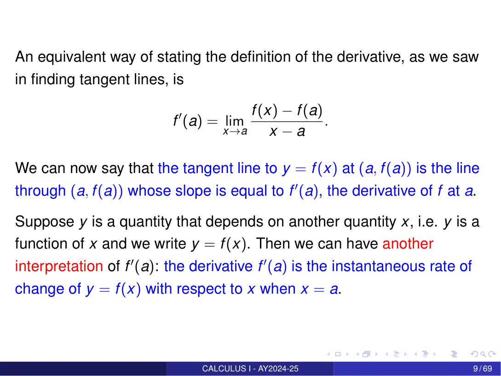
Equivalent form: $f'(a)=\lim_{x\to a}\frac{f(x)-f(a)}{x-a}$. The tangent line at $(a,f(a))$ is the line through that point with slope $f'(a)$: $y-f(a)=f'(a)(x-a)$. Second meaning: $f'(a)$ is the instantaneous rate of change of $y=f(x)$ with respect to $x$ at $x=a$.
Dạng tương đương: $f'(a)=\lim_{x\to a}\frac{f(x)-f(a)}{x-a}$. Tiếp tuyến tại $(a,f(a))$ là đường thẳng qua điểm đó với hệ số góc $f'(a)$: $y-f(a)=f'(a)(x-a)$. Ý nghĩa thứ hai: $f'(a)$ là tốc độ biến thiên tức thời của $y=f(x)$ theo $x$ tại $x=a$.
Find the equation of the tangent line to $y=x^3$ at $(1,1)$.
Tìm phương trình tiếp tuyến của $y=x^3$ tại $(1,1)$.
Answer and solution · Đáp án và lời giải
Answer · Đáp án: $y=3x-2$
$f'(1)=3\cdot1^2=3$, so $y-1=3(x-1)$, i.e. $y=3x-2$.
$f'(1)=3\cdot1^2=3$, nên $y-1=3(x-1)$, tức $y=3x-2$.
The derivative as a function · Đạo hàm như một hàm số
★★★ Core · Cốt lõi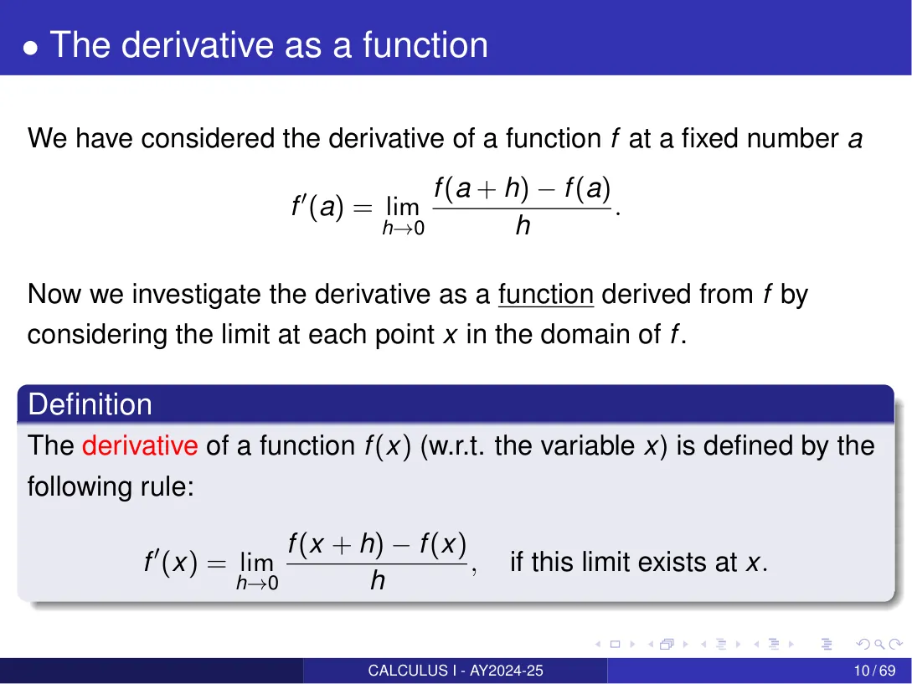
Now let the point move: for each $x$ in the domain, $f'(x)=\lim_{h\to0}\frac{f(x+h)-f(x)}{h}$ if this limit exists. So $f'$ is a new function built from $f$. Stress the three steps of a calculation: form the difference quotient, simplify so that $h$ cancels, then let $h\to0$.
Bây giờ cho điểm chuyển động: với mỗi $x$ thuộc tập xác định, $f'(x)=\lim_{h\to0}\frac{f(x+h)-f(x)}{h}$ nếu giới hạn này tồn tại. Vậy $f'$ là một hàm mới được xây từ $f$. Nhấn mạnh ba bước tính: lập thương sai phân, rút gọn để $h$ triệt tiêu, rồi cho $h\to0$.
Find $f'(x)$ from the definition for $f(x)=x^2-3x$.
Tìm $f'(x)$ từ định nghĩa cho $f(x)=x^2-3x$.
Answer and solution · Đáp án và lời giải
Answer · Đáp án: $f'(x)=2x-3$
$\frac{(x+h)^2-3(x+h)-x^2+3x}{h}=\frac{2xh+h^2-3h}{h}=2x+h-3\to2x-3$.
$\frac{(x+h)^2-3(x+h)-x^2+3x}{h}=\frac{2xh+h^2-3h}{h}=2x+h-3\to2x-3$.
Domain of $f'$ and other notations · Tập xác định của $f'$ và các ký hiệu khác
★★★ Core · Cốt lõi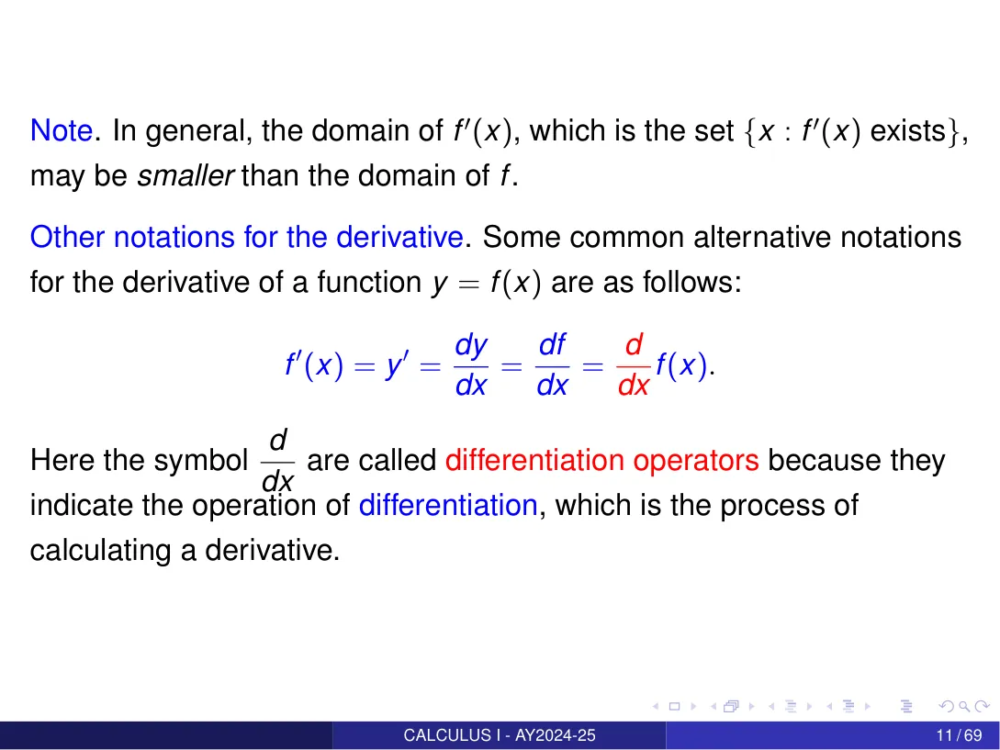
The domain of $f'$ is $\{x:f'(x)\text{ exists}\}$ and may be smaller than the domain of $f$. Notations for the same thing: $f'(x)=y'=\frac{dy}{dx}=\frac{df}{dx}=\frac d{dx}f(x)$, where $\frac d{dx}$ is the differentiation operator.
Tập xác định của $f'$ là $\{x:f'(x)\text{ tồn tại}\}$ và có thể nhỏ hơn tập xác định của $f$. Các ký hiệu cho cùng một đại lượng: $f'(x)=y'=\frac{dy}{dx}=\frac{df}{dx}=\frac d{dx}f(x)$, trong đó $\frac d{dx}$ là toán tử đạo hàm.
Leibniz notation is not (yet) a fraction · Ký hiệu Leibniz chưa phải là một phân số
★★ Important · Quan trọng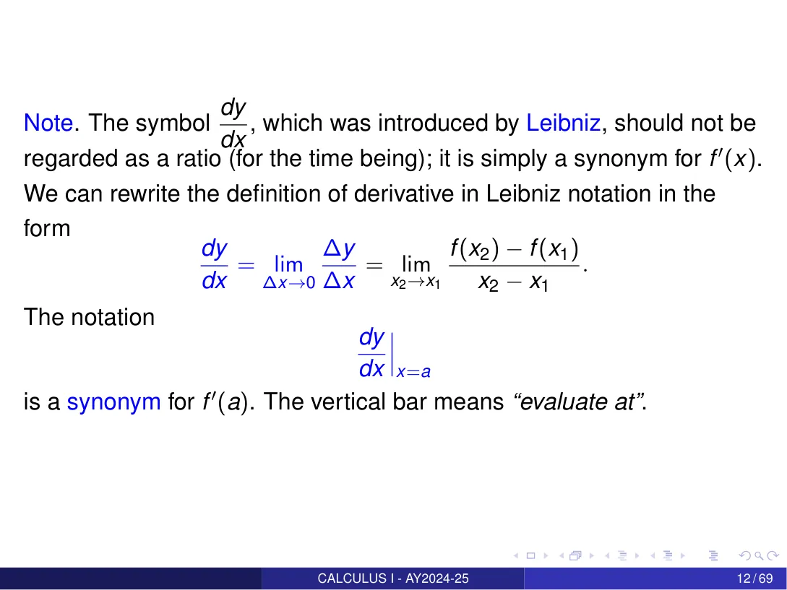
Leibniz's $\frac{dy}{dx}$ should not be read as a ratio for now: it is a synonym for $f'(x)$, the limit of $\frac{\Delta y}{\Delta x}$. The notation $\frac{dy}{dx}\Big|_{x=a}$ means $f'(a)$: the bar says "evaluate at".
Ký hiệu $\frac{dy}{dx}$ của Leibniz chưa được đọc như một tỉ số: nó là tên gọi khác của $f'(x)$, giới hạn của $\frac{\Delta y}{\Delta x}$. Ký hiệu $\frac{dy}{dx}\Big|_{x=a}$ nghĩa là $f'(a)$: thanh đứng đọc là "tính tại".
If $y=x^2$, write $f'(3)$ in Leibniz notation and compute it.
Nếu $y=x^2$, viết $f'(3)$ bằng ký hiệu Leibniz và tính nó.
Answer and solution · Đáp án và lời giải
Answer · Đáp án: $\dfrac{dy}{dx}\Big|_{x=3}=6$
$\frac{dy}{dx}=2x$, evaluated at $x=3$ gives $6$.
$\frac{dy}{dx}=2x$, tính tại $x=3$ cho $6$.
Gottfried Wilhelm Leibniz · Gottfried Wilhelm Leibniz
★ Context · Bổ trợ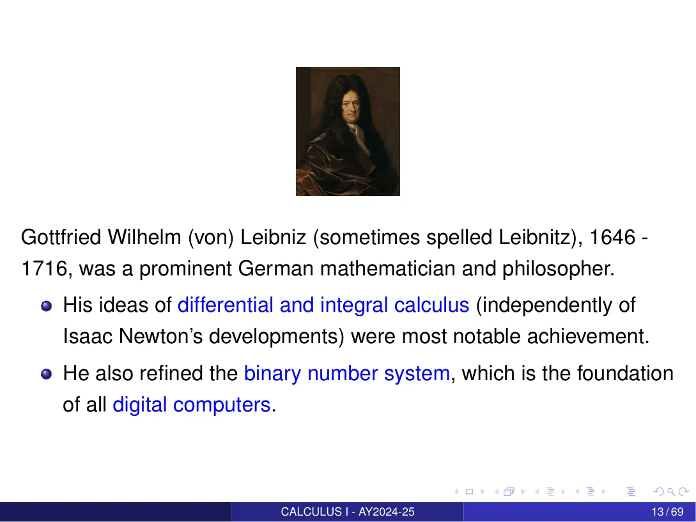
A historical aside: Leibniz (1646–1716), a German mathematician and philosopher, created differential and integral calculus independently of Newton, and refined the binary number system that underlies digital computers. Keep it to thirty seconds.
Một chút lịch sử: Leibniz (1646–1716), nhà toán học và triết gia người Đức, xây dựng phép tính vi phân và tích phân độc lập với Newton, và hoàn thiện hệ nhị phân là nền tảng của máy tính số. Nói ngắn trong ba mươi giây.
Differentiability · Khả vi
★★★ Core · Cốt lõi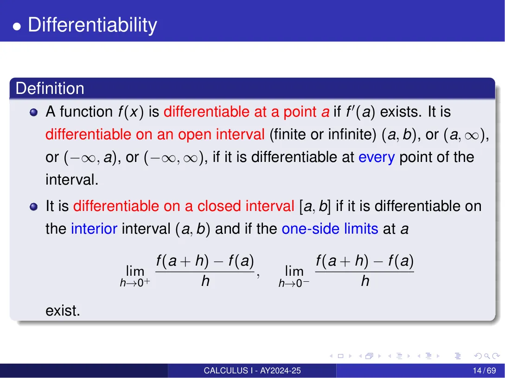
$f$ is differentiable at $a$ if $f'(a)$ exists; differentiable on an open interval if it is differentiable at every point; on a closed interval $[a,b]$ if it is differentiable on $(a,b)$ and the one-sided limits of the difference quotient exist at the endpoints.
$f$ khả vi tại $a$ nếu $f'(a)$ tồn tại; khả vi trên một khoảng mở nếu khả vi tại mọi điểm; trên đoạn đóng $[a,b]$ nếu khả vi trên $(a,b)$ và các giới hạn một phía của thương sai phân tại hai đầu mút tồn tại.
Differentiable implies continuous; $|x|$ is the counterexample · Khả vi kéo theo liên tục; $|x|$ là phản ví dụ
★★★ Core · Cốt lõi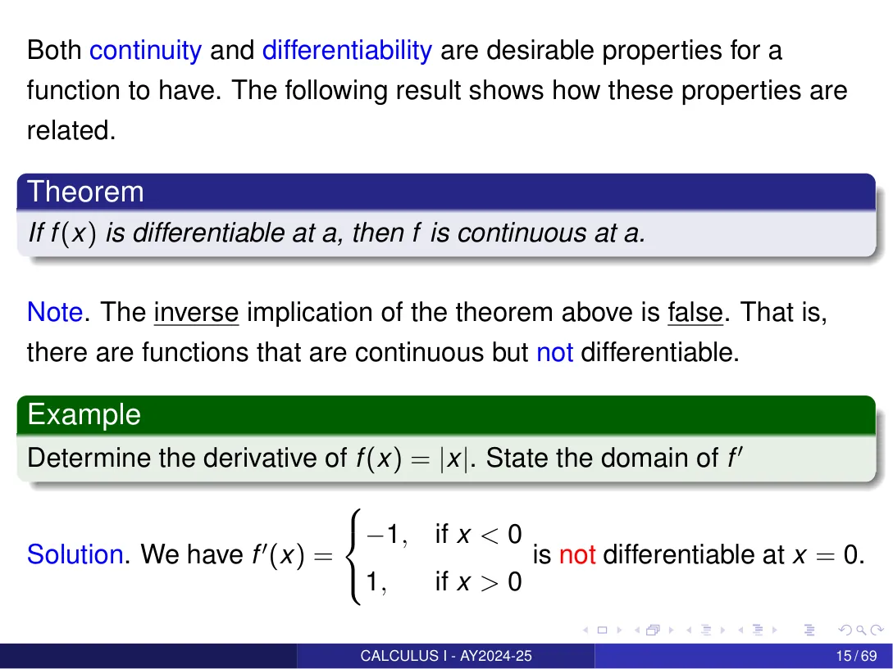
Theorem: if $f$ is differentiable at $a$, then it is continuous at $a$. The converse is false: $f(x)=|x|$ is continuous everywhere but $f'(x)=-1$ for $x<0$, $+1$ for $x>0$, and $f'(0)$ does not exist. So $\operatorname{dom}f'=\mathbb R\setminus\{0\}$.
Định lý: nếu $f$ khả vi tại $a$ thì liên tục tại $a$. Mệnh đề đảo là sai: $f(x)=|x|$ liên tục khắp nơi nhưng $f'(x)=-1$ khi $x<0$, $+1$ khi $x>0$, và $f'(0)$ không tồn tại. Vậy $\operatorname{dom}f'=\mathbb R\setminus\{0\}$.
Tests love "continuous but not differentiable" examples; the arrow only goes one way: differentiable $\Rightarrow$ continuous.
Đề thi rất hay hỏi ví dụ "liên tục nhưng không khả vi"; mũi tên chỉ đi một chiều: khả vi $\Rightarrow$ liên tục.
Show from the definition that $f(x)=|x|$ is not differentiable at $0$.
Chứng minh từ định nghĩa rằng $f(x)=|x|$ không khả vi tại $0$.
Answer and solution · Đáp án và lời giải
Answer · Đáp án: left slope $-1$, right slope $+1$
$\frac{f(h)-f(0)}h=\frac{|h|}h$ equals $1$ for $h>0$ and $-1$ for $h<0$: the one-sided limits differ.
$\frac{f(h)-f(0)}h=\frac{|h|}h$ bằng $1$ khi $h>0$ và $-1$ khi $h<0$: hai giới hạn một phía khác nhau.
Three ways to fail to be differentiable: 1. a discontinuity · Ba cách để không khả vi: 1. gián đoạn
★★★ Core · Cốt lõi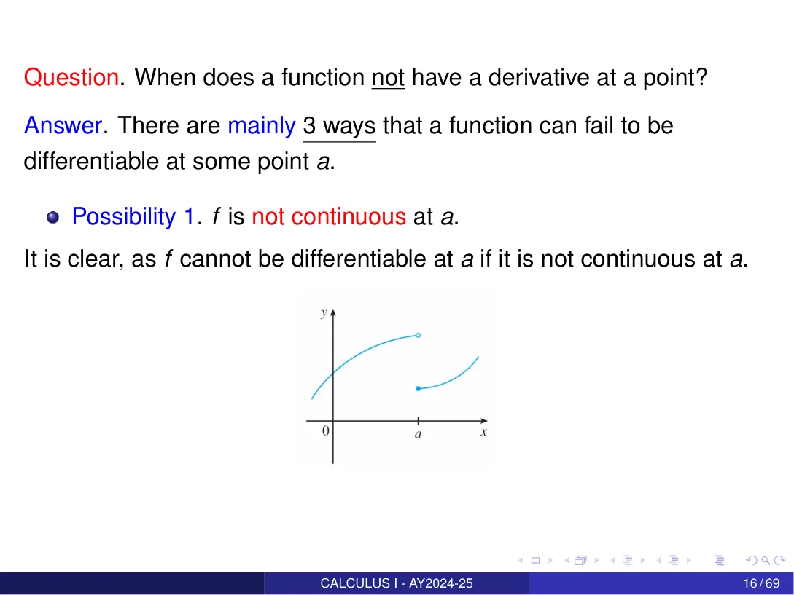
Question: when does a function have no derivative at $a$? Possibility 1: $f$ is not continuous at $a$ (by the theorem, differentiability would force continuity). Example: any jump or hole.
Câu hỏi: khi nào hàm không có đạo hàm tại $a$? Khả năng 1: $f$ không liên tục tại $a$ (theo định lý, khả vi sẽ kéo theo liên tục). Ví dụ: bất kỳ bước nhảy hay lỗ nào.
2. A corner · 2. Điểm góc
★★★ Core · Cốt lõi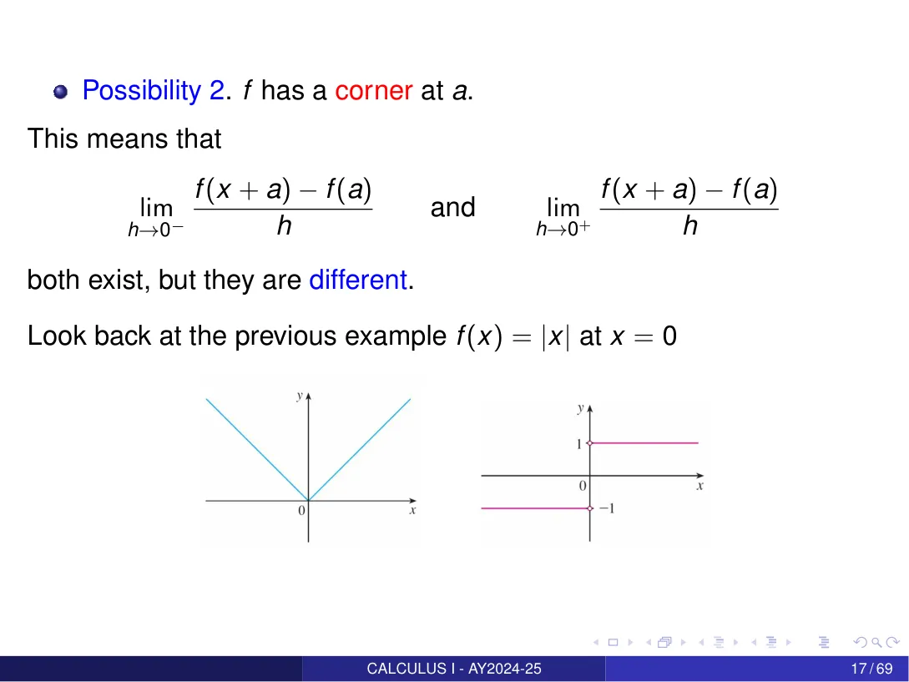
Possibility 2: $f$ has a corner at $a$: both one-sided limits of the difference quotient exist but are different, as for $|x|$ at $0$. The left tangent and the right tangent exist but do not agree.
Khả năng 2: $f$ có điểm góc tại $a$: cả hai giới hạn một phía của thương sai phân đều tồn tại nhưng khác nhau, như $|x|$ tại $0$. Tiếp tuyến trái và tiếp tuyến phải tồn tại nhưng không trùng nhau.
Where does $f(x)=|x-2|$ fail to be differentiable and why?
$f(x)=|x-2|$ không khả vi ở đâu và vì sao?
Answer and solution · Đáp án và lời giải
Answer · Đáp án: at $x=2$ (a corner: slopes $-1$ and $+1$)
$\frac{f(2+h)-f(2)}h=\frac{|h|}h\to1$ from the right and $-1$ from the left; elsewhere $f'=\pm1$.
$\frac{f(2+h)-f(2)}h=\frac{|h|}h\to1$ từ bên phải và $-1$ từ bên trái; ở nơi khác $f'=\pm1$.
3. A vertical tangent · 3. Tiếp tuyến thẳng đứng
★★★ Core · Cốt lõi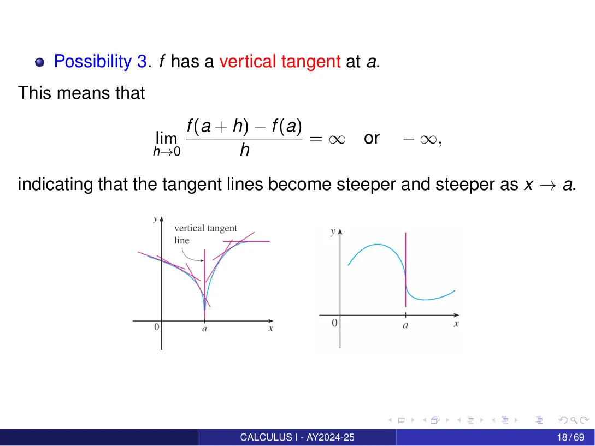
Possibility 3: vertical tangent: $\frac{f(a+h)-f(a)}h\to\pm\infty$, the tangent lines get steeper and steeper. The curve is smooth but the slope is infinite, so $f'(a)$ does not exist. Example: $\sqrt[3]x$ at $0$.
Khả năng 3: tiếp tuyến thẳng đứng: $\frac{f(a+h)-f(a)}h\to\pm\infty$, các tiếp tuyến dốc dần lên. Đường cong trơn nhưng hệ số góc vô cực nên $f'(a)$ không tồn tại. Ví dụ: $\sqrt[3]x$ tại $0$.
Show that $f(x)=\sqrt[3]x$ has a vertical tangent at $0$.
Chứng tỏ $f(x)=\sqrt[3]x$ có tiếp tuyến thẳng đứng tại $0$.
Answer and solution · Đáp án và lời giải
Answer · Đáp án: the difference quotient tends to $+\infty$
$\frac{\sqrt[3]h-0}h=h^{-2/3}\to+\infty$ as $h\to0$ from either side.
$\frac{\sqrt[3]h-0}h=h^{-2/3}\to+\infty$ khi $h\to0$ từ cả hai phía.
The normal line · Pháp tuyến
★★ Important · Quan trọng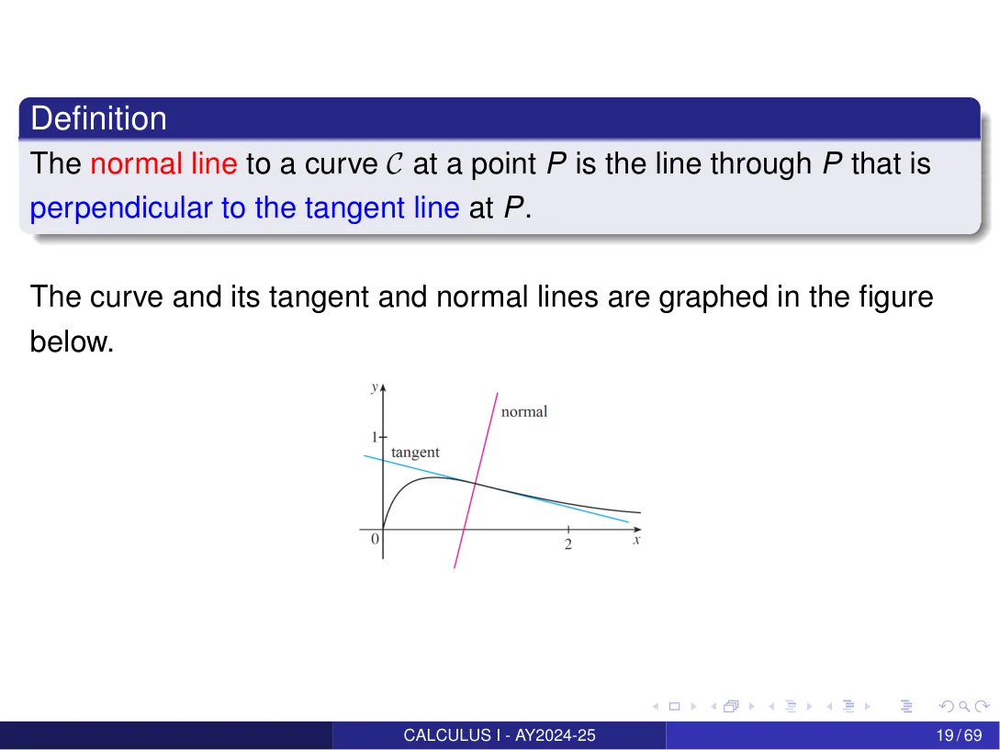
The normal line to a curve at $P$ is the line through $P$ perpendicular to the tangent there. If the tangent has slope $m\ne0$, the normal has slope $-\frac1m$.
Pháp tuyến của đường cong tại $P$ là đường thẳng qua $P$ vuông góc với tiếp tuyến tại đó. Nếu tiếp tuyến có hệ số góc $m\ne0$ thì pháp tuyến có hệ số góc $-\frac1m$.
Find the tangent and the normal to $y=x^2$ at $(1,1)$.
Tìm tiếp tuyến và pháp tuyến của $y=x^2$ tại $(1,1)$.
Answer and solution · Đáp án và lời giải
Answer · Đáp án: tangent $y=2x-1$; normal $y=-\dfrac x2+\dfrac32$
$f'(1)=2$, tangent $y-1=2(x-1)$. Normal slope $-\frac12$: $y-1=-\frac12(x-1)$, i.e. $y=-\frac x2+\frac32$.
$f'(1)=2$, tiếp tuyến $y-1=2(x-1)$. Pháp tuyến có hệ số góc $-\frac12$: $y-1=-\frac12(x-1)$, tức $y=-\frac x2+\frac32$.
Higher derivatives: the second derivative · Đạo hàm cấp cao: đạo hàm cấp hai
★★★ Core · Cốt lõi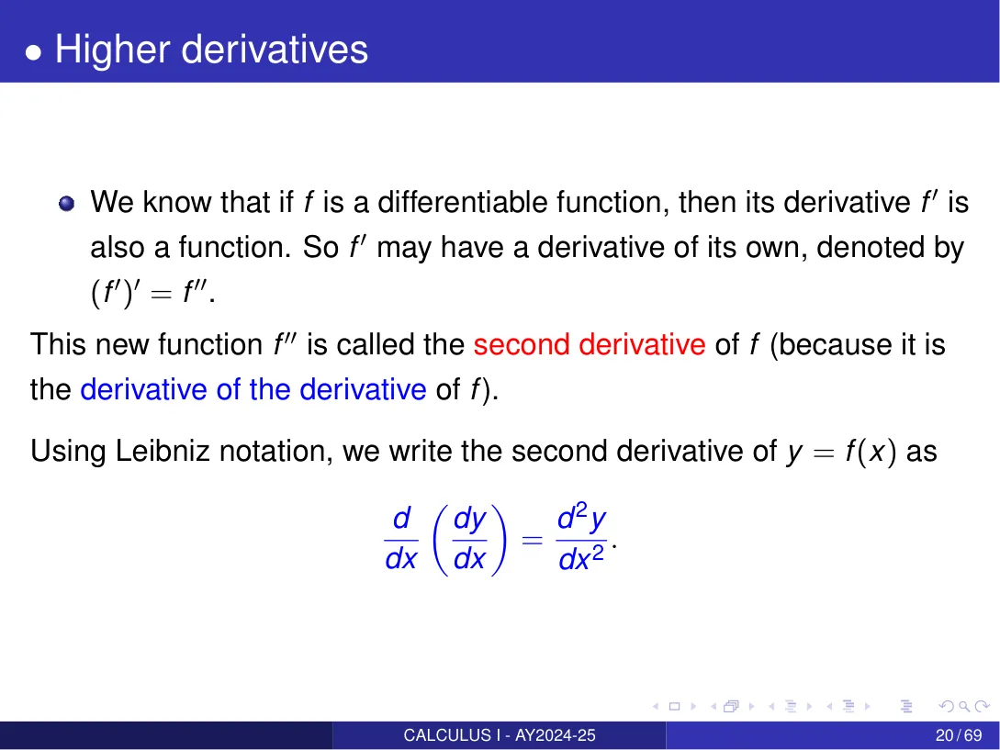
$f'$ is itself a function, so it may have a derivative: $f''=(f')'$, the second derivative. In Leibniz notation $\frac{d}{dx}\left(\frac{dy}{dx}\right)=\frac{d^2y}{dx^2}$. It measures the rate of change of the slope.
$f'$ cũng là một hàm số nên có thể có đạo hàm: $f''=(f')'$, đạo hàm cấp hai. Theo ký hiệu Leibniz $\frac{d}{dx}\left(\frac{dy}{dx}\right)=\frac{d^2y}{dx^2}$. Nó đo tốc độ thay đổi của hệ số góc.
Find $f''(x)$ for $f(x)=x^4-3x^2$.
Tìm $f''(x)$ cho $f(x)=x^4-3x^2$.
Answer and solution · Đáp án và lời giải
Answer · Đáp án: $f''(x)=12x^2-6$
$f'(x)=4x^3-6x$ and $f''(x)=12x^2-6$.
$f'(x)=4x^3-6x$ và $f''(x)=12x^2-6$.
The third and the $n$-th derivative · Đạo hàm cấp ba và cấp $n$
★★ Important · Quan trọng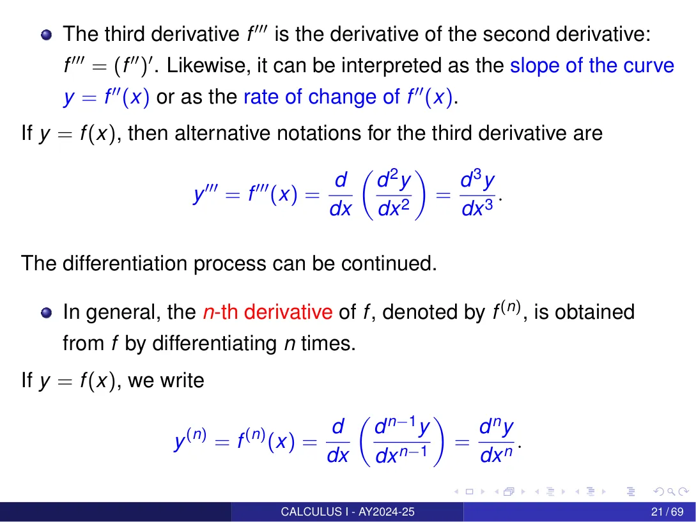
$f'''=(f'')'$, and in general the $n$-th derivative $f^{(n)}$ comes from differentiating $n$ times; in Leibniz form $\frac{d^ny}{dx^n}$. Warn: $f^{(3)}$ in brackets is the third derivative, not the cube.
$f'''=(f'')'$, và tổng quát đạo hàm cấp $n$ là $f^{(n)}$ nhận được bằng cách lấy đạo hàm $n$ lần; theo Leibniz là $\frac{d^ny}{dx^n}$. Lưu ý: $f^{(3)}$ có ngoặc là đạo hàm cấp ba, không phải lũy thừa ba.
Find the third and fourth derivatives of $\sin x$.
Tìm đạo hàm cấp ba và cấp bốn của $\sin x$.
Answer and solution · Đáp án và lời giải
Answer · Đáp án: $-\cos x$ and $\sin x$
$(\sin x)'=\cos x$, $''=-\sin x$, $'''=-\cos x$, $^{(4)}=\sin x$: the pattern repeats every four derivatives.
$(\sin x)'=\cos x$, $''=-\sin x$, $'''=-\cos x$, $^{(4)}=\sin x$: quy luật lặp lại sau mỗi bốn lần đạo hàm.
The meaning of the second derivative: acceleration · Ý nghĩa của đạo hàm cấp hai: gia tốc
★★ Important · Quan trọng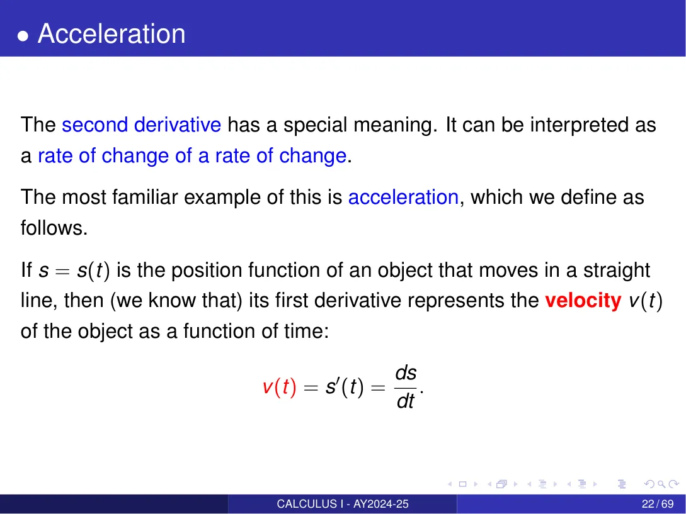
The second derivative is a rate of change of a rate of change. The familiar example: for a straight-line motion $s=s(t)$ the first derivative is the velocity $v(t)=s'(t)=\frac{ds}{dt}$.
Đạo hàm cấp hai là tốc độ thay đổi của một tốc độ thay đổi. Ví dụ quen thuộc: với chuyển động thẳng $s=s(t)$, đạo hàm cấp một là vận tốc $v(t)=s'(t)=\frac{ds}{dt}$.
Acceleration · Gia tốc
★★★ Core · Cốt lõi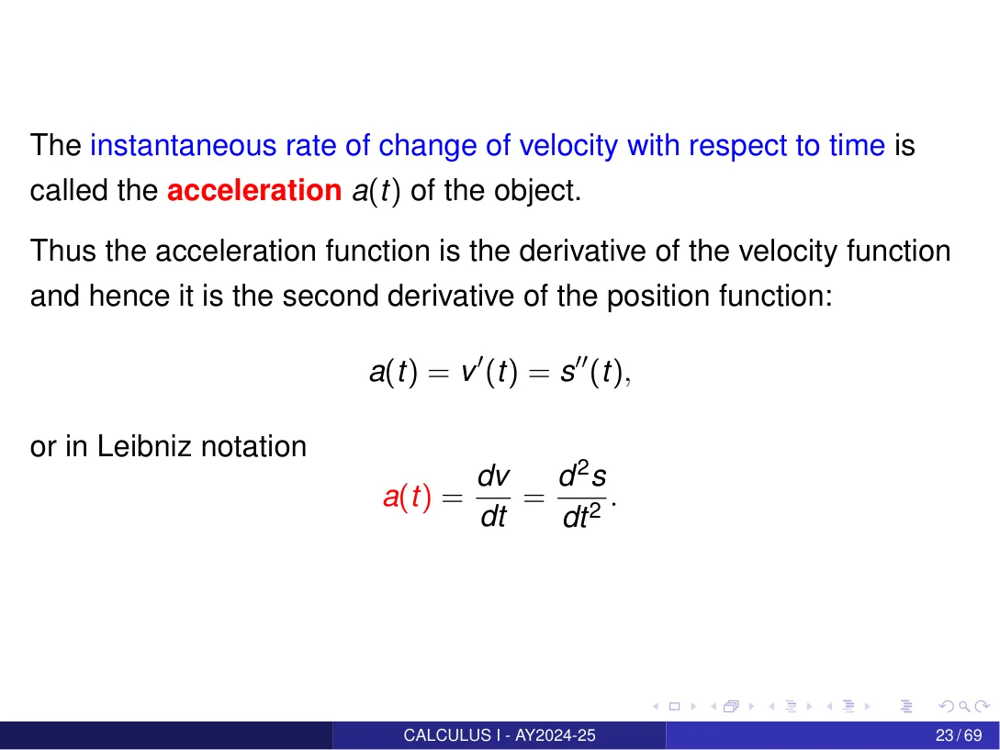
The instantaneous rate of change of velocity is the acceleration: $a(t)=v'(t)=s''(t)=\frac{dv}{dt}=\frac{d^2s}{dt^2}$. Position, velocity, acceleration are three successive derivatives.
Tốc độ thay đổi tức thời của vận tốc là gia tốc: $a(t)=v'(t)=s''(t)=\frac{dv}{dt}=\frac{d^2s}{dt^2}$. Vị trí, vận tốc, gia tốc là ba đạo hàm liên tiếp.
For $s(t)=t^3-6t^2+9t$ find $a(t)$ and $a(4)$.
Với $s(t)=t^3-6t^2+9t$, tìm $a(t)$ và $a(4)$.
Answer and solution · Đáp án và lời giải
Answer · Đáp án: $a(t)=6t-12$; $a(4)=12$ m/s$^2$
$v=3t^2-12t+9$, $a=v'=6t-12$, so $a(4)=24-12=12$.
$v=3t^2-12t+9$, $a=v'=6t-12$, nên $a(4)=24-12=12$.
Speed · Tốc độ
★★ Important · Quan trọng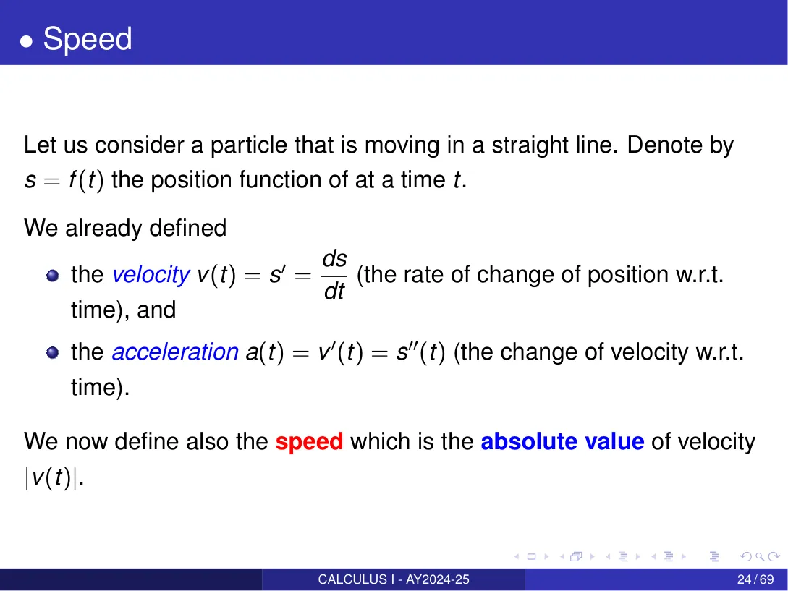
Speed is the absolute value of the velocity, $|v(t)|$: it has no direction. Velocity can be negative (moving backwards) while speed is never negative.
Tốc độ là giá trị tuyệt đối của vận tốc, $|v(t)|$: không có hướng. Vận tốc có thể âm (chuyển động lùi) còn tốc độ không bao giờ âm.
For $s(t)=t^3-6t^2+9t$ find the velocity and the speed at $t=2$.
Với $s(t)=t^3-6t^2+9t$, tìm vận tốc và tốc độ tại $t=2$.
Answer and solution · Đáp án và lời giải
Answer · Đáp án: $v(2)=-3$ m/s; speed $3$ m/s
$v(t)=3t^2-12t+9$, $v(2)=12-24+9=-3$ (moving backwards), speed $=|-3|=3$.
$v(t)=3t^2-12t+9$, $v(2)=12-24+9=-3$ (đang đi lùi), tốc độ $=|-3|=3$.
Exercise: a particle moving on a line · Bài tập: chất điểm chuyển động trên đường thẳng
★★★ Core · Cốt lõi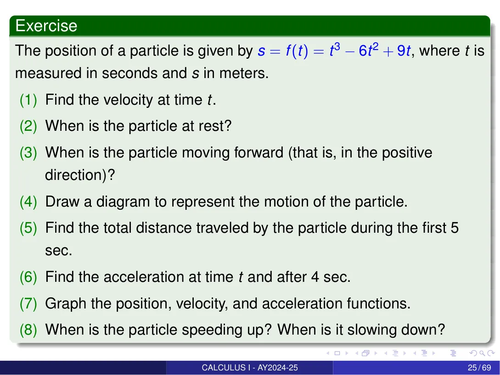
Position $s=t^3-6t^2+9t$ (metres, seconds). Eight tasks: velocity; when at rest; when moving forward; a diagram; total distance in the first $5$ s; acceleration at $t$ and after $4$ s; graphs; when speeding up or slowing down. Do it live; the answers are on the next two slides. Factor $v(t)=3t^2-12t+9=3(t-1)(t-3)$ first, since it drives parts 2, 3, 4 and 8.
Vị trí $s=t^3-6t^2+9t$ (mét, giây). Tám yêu cầu: vận tốc; khi nào đứng yên; khi nào chuyển động tiến; sơ đồ chuyển động; tổng quãng đường trong $5$ s đầu; gia tốc tại $t$ và sau $4$ s; đồ thị; khi nào tăng tốc hay giảm tốc. Làm trực tiếp; đáp án ở hai slide sau. Phân tích trước $v(t)=3t^2-12t+9=3(t-1)(t-3)$ vì nó quyết định các câu 2, 3, 4 và 8.
Same questions (1) and (2) for $s(t)=t^3-9t^2+24t$.
Cùng câu (1) và (2) cho $s(t)=t^3-9t^2+24t$.
Answer and solution · Đáp án và lời giải
Answer · Đáp án: $v=3t^2-18t+24$; at rest at $t=2$ and $t=4$
$v=s'=3t^2-18t+24=3(t-2)(t-4)$, which vanishes at $t=2$ and $t=4$.
$v=s'=3t^2-18t+24=3(t-2)(t-4)$, bằng $0$ tại $t=2$ và $t=4$.
The answers: velocity, rest, direction, distance, acceleration · Đáp án: vận tốc, đứng yên, chiều chuyển động, quãng đường, gia tốc
★★★ Core · Cốt lõi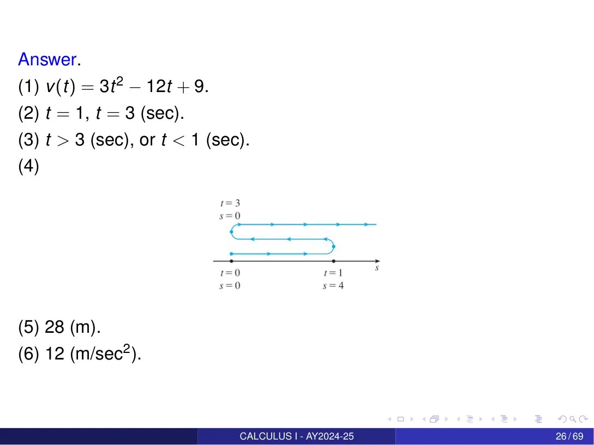
(1) $v=3t^2-12t+9$. (2) At rest when $v=0$: $t=1$ and $t=3$ s. (3) Forward ($v>0$) for $t<1$ or $t>3$. (5) Total distance is not $s(5)-s(0)$: the particle turns back at $t=1$ and $t=3$. $s(1)=4$, $s(3)=0$, $s(5)=20$, so distance $=|4-0|+|0-4|+|20-0|=28$ m. (6) $a=6t-12$, $a(4)=12$ m/s$^2$.
(1) $v=3t^2-12t+9$. (2) Đứng yên khi $v=0$: $t=1$ và $t=3$ s. (3) Chuyển động tiến ($v>0$) khi $t<1$ hoặc $t>3$. (5) Tổng quãng đường không phải $s(5)-s(0)$: chất điểm quay đầu tại $t=1$ và $t=3$. $s(1)=4$, $s(3)=0$, $s(5)=20$ nên quãng đường $=|4-0|+|0-4|+|20-0|=28$ m. (6) $a=6t-12$, $a(4)=12$ m/s$^2$.
Check the slide: compute the total distance travelled in the first $5$ s by splitting the motion at the turning points.
Kiểm tra slide: tính tổng quãng đường đi được trong $5$ s đầu bằng cách tách chuyển động tại các điểm quay đầu.
Answer and solution · Đáp án và lời giải
Answer · Đáp án: $28$ m
Positions at $t=0,1,3,5$ are $0,4,0,20$. Distances of the legs: $4$, $4$, $20$. Total $28$.
Vị trí tại $t=0,1,3,5$ là $0,4,0,20$. Quãng đường từng đoạn: $4$, $4$, $20$. Tổng $28$.
The graphs, and when the particle speeds up or slows down · Các đồ thị, và khi nào chất điểm tăng tốc hay giảm tốc
★★★ Core · Cốt lõi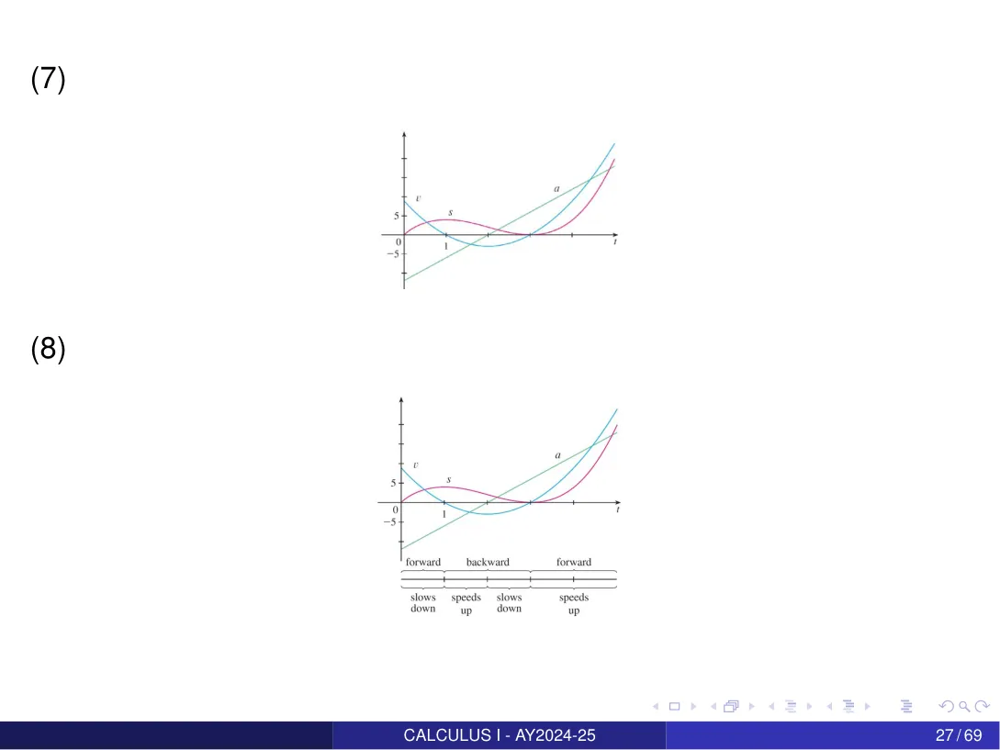
(7) Graph $s$, $v$, $a$ one under the other. (8) Speeding up when $v$ and $a$ have the same sign, slowing down when the signs differ. With $v=3(t-1)(t-3)$ and $a=6(t-2)$: on $(0,1)$ $v>0,a<0$: slowing; on $(1,2)$ $v<0,a<0$: speeding up; on $(2,3)$ $v<0,a>0$: slowing; on $(3,\infty)$ $v>0,a>0$: speeding up.
(7) Vẽ đồ thị $s$, $v$, $a$ xếp dọc. (8) Tăng tốc khi $v$ và $a$ cùng dấu, giảm tốc khi khác dấu. Với $v=3(t-1)(t-3)$ và $a=6(t-2)$: trên $(0,1)$ có $v>0,a<0$: giảm tốc; trên $(1,2)$ có $v<0,a<0$: tăng tốc; trên $(2,3)$ có $v<0,a>0$: giảm tốc; trên $(3,\infty)$ có $v>0,a>0$: tăng tốc.
The sign rule "same sign means speeding up" is a favourite test question and links the first and second derivatives to physics.
Quy tắc dấu "cùng dấu nghĩa là tăng tốc" là câu hỏi thi ưa thích và nối đạo hàm cấp một, cấp hai với vật lý.
For $s(t)=t^3-6t^2+9t$ decide, at $t=0.5$, $1.5$, $2.5$ and $4$, whether the particle speeds up or slows down.
Với $s(t)=t^3-6t^2+9t$, xác định tại $t=0.5$, $1.5$, $2.5$ và $4$ chất điểm tăng tốc hay giảm tốc.
Answer and solution · Đáp án và lời giải
Answer · Đáp án: slows, speeds up, slows, speeds up
Speeding up means $v\cdot a>0$. $v(0.5)=3.75>0$, $a=-9<0$: slows. $v(1.5)=-2.25<0$, $a=-3<0$: speeds up. $v(2.5)=-2.25<0$, $a=3>0$: slows. $v(4)=9>0$, $a=12>0$: speeds up.
Tăng tốc nghĩa là $v\cdot a>0$. $v(0.5)=3.75>0$, $a=-9<0$: giảm tốc. $v(1.5)=-2.25<0$, $a=-3<0$: tăng tốc. $v(2.5)=-2.25<0$, $a=3>0$: giảm tốc. $v(4)=9>0$, $a=12>0$: tăng tốc.